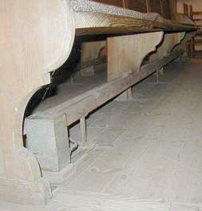
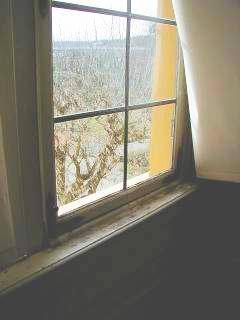

Temperering af bygnings-hylsteret - Rigtig og forkert opvarmning i gamle og nye huse
Bygge- og sundhedsbeskyttelse ved hjælp af rigtig opvarmning.
von Konrad Fischer
 Konrad Fischer
Konrad FischerTemperering af bygnings-hylsteret -
Rigtig og forkert opvarmning i gamle og nye huse
Bygge- og sundhedsbeskyttelse ved hjælp af rigtig opvarmning
"Ha' kun modet, til frit at sige din mening ganske uforstyrret!
Det vil være tvivlen som er i din sjæl, som hører det.
Og er lysten til at tvivle forsvinder det gale.
Du tror det ikke, hvorledes et ord kan virke." Johann Wolfgang von Goethe
Frit oversat...
Hvem som tænker bare en smule over midlerne i de klimaapokalyptiske besvorende energibesparelser, vil hurtigt komme på følgende: druknende isoleringsmaterialer eller opskummede bygningsmaterialeperversioner, stats-støttede-trængende svinderi-energiproduktioner fra vind og sol, som sluger mere energi end de fremstiller, alt dette kan ikke spare varmeenergi. Det kan kun varmeteknikken selv. En kritisk analyse af de gængse systemer tilsammen viser:
- "Alternativ-High Tech" fra fotovoltaik over vindrotor-ventilationsanlæg, til solfangere og til varmegenvinding. Dette øko-galskab bliver udnyttet til uøkonomiske resultater og dermed til at presse penge ud af folk. Desværre har vi i Tyskland ingen tapper Bjørn Lomborg, som kæmper mod øko-galskaben. Der findes ikke nogen som kæmper imod energisparre-varmeteknik som kun smider energien væk, isolering som ikke kan isolere og "miljø"-materialer, der kun skader miljøet økonomisk og sundsmæssigt, samt miljøskatten som kun ødelægger miljøet, økonomien og samfundet. Alt dette også skader menneskene, både på pengepungen og sundheden.
- Rumtempererings konvektionsopvarmningen får energien til at futte af gennem fuger og revner, gennem vinduer og døre.
- Rumventilator varmesystemer leverer tvunget kondens og murefugt til ydervæge eller inventar som altid er noget køligere.
- Kun gennem strålingsopvarmning kan man virkelig spare energi.
Hvorfra kommer alt dette? Læs bare videre:
Temperering af bygnings-rumhylsterne
 Sokkeltemperering, detaljeudsnit hvor varmerørsforklædningen ses samt et snit af rørføringen bag fodlisten
(Neuenburg Slot, Jagtværelse med træpanel)
Frem- og tilbageløbet af varmeførslen er gemt væk bag fodlisten
Dennes varmeafgivelse gør sokkelområdet til strålingsvarmeapparat.
(skabt af.: Architektur- und Ingenieurbüro Konrad Fischer, Hochstadt a. Main)
Sokkeltemperering, detaljeudsnit hvor varmerørsforklædningen ses samt et snit af rørføringen bag fodlisten
(Neuenburg Slot, Jagtværelse med træpanel)
Frem- og tilbageløbet af varmeførslen er gemt væk bag fodlisten
Dennes varmeafgivelse gør sokkelområdet til strålingsvarmeapparat.
(skabt af.: Architektur- und Ingenieurbüro Konrad Fischer, Hochstadt a. Main)
Hvorfor og hvor længe har der været temperering af bygningsrumhylstere?
Den tekniske omvæltning i moderne tid har også sat sine spor i opvarmningsteknikken. Tidligere var der hovedsageligt strålingsintensiv opvarmningsteknik med dårlig energiindsats, men det var fornuftigt for både murværk og mennesker samt skadesløs og sund opvarmning. Mens det 19. århundrede skabte afgørende ændringer: varmeteknikken ændrede sig mere og mere til at være luftopvarmende og luftbevægende konvektionsopvarmning. Den traditionelle opvarmning af huset og dets beboere i den kolde årstid skete gennem solstråling som man havde fået via teknisk erfaringsviden. Man vidste at man skulle opholde sig rundt om maden og hvor der blev bagt. De langvarende varmeholdende og varmestrålende sten ved den åbne ild måtte have udløst en aha-indsigt, og med bageovnen og strålingsvarmen måtte det have slået tonen an. Naturligvis hørte også den første erfaring ved lejrbålet dertil: forrest ved varmen sveder man, bagved - i strålingsskyggen - fryser man.
Et forsøg af John B. Pierce Laboratory, USA, tydeliggjorde målet om fornuftig varmeteknik:
I et rum hvor der opholder sig mennesker ville de med 50oC varm luft og kolde vægge vil fryse jammerligt, mens ved 10oC og varme vægge ville svede ubehageligt meget. (Kilde: Teknisk Info "strålingsenergi - ur-energien, nyt opdaget, TT Technotherm GmbH, Nürnberg).
Det kommer altså ikke an på, hvordan den omgivende luft bliver brugt som støvet opvarmningsmiddel, men af strålingskvaliteten i omgivelserne. Det har vores postindustrielle forfadere erfaret uden "ingeniørvidenskab", "byggefysik", misbrugt natur-kærlighed og DIN-rigtig sagkyndig viden.
I det historiske massiv-byggeri var midlet til temperering af rumhylsteret en enkel eller raffineret varmeteknik som så at sige var fra antikken til den nyere tid. I det gamle Rom havde byggemesteren skabt Hypokausten-varmesystemet. Det fandtes i antikke term-anlæg, klostere eller borgerligt byggeri og var kort sagt et varmesystem som var under gulvet. Denne varmedamp (uden røgspor) blev fordelt som varme gennem vægen med hulmursten (lat. Tubuli). Det skete med en forståelse af varmeproblemerne, energibesparelser og substansskånsomhed i massivt byggeri. Men også med en fornemmelse for fugt- og temperatursvingninger med ekstrem stabile byggekonstruktioner som var helt igennem rigtige: de opvarmede - i det hele taget - rumhylsteret - ikke rumluften.
Den berømte schweiziske byggefagmand Paul Bossert skriver til dette:
"Det græske begreb hypokauston bliver på latin oversat med vaporarium. Det betyder at en tubuli hverken var en udluftningstegl eller en forbrændningsgasudluftning. Derudover var Tubulien enten muret til eller lukket.
Vapore henviser heller ikke til røggas eller varmluft, men til dampe eller dis, denne kondens som efter varmeafgivelsen via kondens-returløb fra den murede underjordiske hypokause blev tilbageført til praefurnium. Romerne havde altså en kondensopvarmning. Hvorfor dog ikke, de var jo ikke så dumme som vi!"
Vitterlig passede denne romerske byggemetode sammen med denne dampopvarmning - de havde jo ikke nogen skimmelfordrende maling eller puds og da slet ikke facade-isolering. I hvert fald blev væggene varme gennem den afsatte kondensvarme. Heraf kan sluttes:
Strålingsvarme i stedet for skidt- og fugtbelastende varmluftstrømning, giver varmere, tørrere, skimmelfri vægge- og indretningsgenstande (møbler/inventar/udstillingsgenstande) overfor systematisk kølig rumluft. Man kan herudfra erklære, at der i historiske rum, indtil indførelsen af luftopvarmede systemer, var der lange tids-intervaller mellem istandsættelsesintervaller af rumskader og inventar. Mens derefter i årevis er der intensive foranstaltninger imod skimmel, svampe, flade- og detaljeforurening, lagpålægning og pudsopløsning, undergrundsforrådnelse, salttrykmobilisering i vekselvirkning mellem opløsning og krystalliering, revnedannelser, instrumentforstemning, flader- og byggedelkorrosion på mærkeflader og metalbyggedele osv. Som en sikker genganger med intelligent husteknink, planlægning- og håndværksydelser. Netop efter mottoet: år efter år. Hvor skønt, at de offentlige men også private bygherrer nu om dags ophober så uudtømmelige opsvulmende pengeforråd, så der lynhurtigt kan gives penge ud til de der "bygge-snu". Frit efter mottoet: Slank dig rask. Og tager vi et kig på skrumpemiddelet, kan vi fastslå: Blodigle og Piranhas kan fås for billige penge. Det er åbenbart det mest afgørende. Koste hvad det vil senere.
Derved var de rigtige penge- og energibesparelser tidligere afgørende:
Tørre rum lader med strålingsteknik er bedst for økonomien. Også det frysende menneske holder den kolde seng varm med sin egen energistrålende varmedunk, som er den billigste form for en veltilpas nattero.
En forhøjet tilsvining af den kølige rumskal gennem varmfugtig tilstøvet luft var i strålingsopvarmede byggeværker tidligere - når der ses bort fra hellige stearinlys og verdslig kønrøg såvel som køkkenrøg - ikke et problem som i dag. Kun på denne måde kunne århundrede gamle væg- og loftsmaling holde indtil vores tid. Og som frilægningen viser igen og igen: Ofte var der stil- eller benyttelsesskift, ikke forurening eller ombygning af vægbeklædningen. Ombygninger som løb over 30-50 år var ingen sjældenhed. I dag bliver forlorent opvarmede rum hvert andet år kalket, for hele tiden at passe til klima-betingelserne og kirkeorgler efterses med overdreven træorms- og mugne-tendens, hvilket er en guldgrube for den nødlidende orgelbyggere, træbeskyttelsesvirksomhederne men også for sundhedssystemet.
Dertil et informativt link, der dog ikke kender ser ud til at kende middelet tempereringsteknik: Kirkeopvarmning - hvordan opstår sådan nogle skader?

En supervarm kirkebænkopvarmning (ligegyldigt hvilken konstruktion) skaber ligesom en luftkanonopskydning til den forfrosne røv (+ de levende lys) og det forfrosne og afkølede hjerte fra den såvel akademiske koncertbesøger og julekirkegængeren. Disse skal nok blive varme, men det garanterer også det mest væmmelige kirkeklima til alle tider: Varm forbrændt-ånde-fugtigheds varmluft stiger op, rammer det underafkølede inventar og de islagte byggedele indtil loftbjælkerne. Derfra kondenserer det så hektolitervis og glæder efterfølgerne af skadedyrene i træet såvel som konservatorerne, giftblanderen- og sprøjteren lige såvel som kirkemaleren og yderligere eksperter. Kun et åbent loft kan blive skabe mere fugt, kun højvande svine mere til. Moses delte vandene, kirkebygningsinspektoratet deler det så igen. Gudskelov. Orgel og skimmel - allestedsnærværende problematik i kirke
Orgel og skimmel - allestedsnærværende problematik i kirke
Også de urgamle transportable bækner med gløder indeni, var fra middelalderen og indtil nyere tid, en lokal og korttids virksom varmekilde. Strålingen kommer fra det varmetrængende menneskelige legeme og videre ud i 'rumhylsteret' helt uden omvej over den lette flygtige luft.
Såvel som den stationære strålingsradiator virker, så giver også kakkelovnen og det åbne ildsted i rummene denne strålevarme. Det sker ved strålingsudveksling mellem væggene og den behagelige lokale-temperatur hvilket samtidig giver et ringe energitab. Den flygtige rumluft er næsen ikke eller kun sekundært opvarmet, derimod bliver varmeenergien fastholdt lang tid i lagre eller i de omgivende flader samt i den massive grundovn. Oven i købet sørgede den opvarmede "rygsøjle" fra kaminanlægget for den bedste udnyttelse af røgen i hele bygningen.
Strålevarmen er også menneskene psykologisk naturlig. Den menneskelige krop kan med huden optage 99% af varmestrålingen. Siden urtiden har solstrålingen været påregnet kropkonstitutionen. Så snart det kommer til fugtvarme luftstrømme så bringer den lynhurtigt sundheden sammen: Hvem har ikke hørt om fønsmerter og troper med fare for epidemi? Præcis så "gennemprøvet" er vores moderne luftopvarmet "tropeklima" med radiatorer og konvektorer i tiltættede rum: Over en 1/3 af den tyske befolkning er imidlertid allergikere, som med 8000-10000 astma-døde er vi tyske europamestre på dette kontinent. Kun det fugtige Irland har her mere at byde på. Takket være anstrengelserne fra isolations-, opvarmnings-, og ventilationsindustrien og deres politiske og byggesagkyndige som medskyldige, bliver vi overhalet af Irland. Druknede isoleringspakker, overtættede skimmelflader, slimede luftanlæg og skadestof-blæsende varmesystemer tjener alle til dette mål. Også i museums- og kirkesektoren bliver det astma-sygemeldte personale og kortvarig sporemistænkte besøgende altid et påtrængende emne.
Tilvejebringelsen af praksisen gennem teorien
Ved professoratet for opvarmning og luftning ved Prof. Hermann Rietschel blev i 1885 på Teknisk Universitet Berlin blev efterligningen af solstrålingen gennem det varme menneske indstillet. Med de watt'lige dampmaskiner holdte dampopvarmningen sit indtog i byggeteknikken. Rietschel "opfandt" den luftopvarmende ripperadiator i sit beregningsgrundlag. Dette frembrud i den "moderne" teknik i det praktiske erfaringsmiljø revolutionerede fra da af, fra den energi- og erfaringsmiljø gennemprøvede strålingsvarme, til den energiforspildte og sygeskabende konvektionsopvarmning. Kun knebent kom opvarmet luft ud fra bygningen, nu trækkede alle hjørner og ender den varmetekniske tvungne luftomvæltning, rumskallen blev sort som damplokomotiver og den dyre opvarmningsluft i store og små rum stoppede som et tæppe, uden at kunne forsørge nogen bruger med varme. Hvordan man nu vender og drejer det så har de eksisterende forslag og forsøg, været et forsøg på at videreudvikle princippet med strålingsvarme, men har indskrænket sig til de enkelte eksempler. I forbundsbladet "Der Gesundheits-Ingenieur" , tidligere "Der Rohrleger und Gesundheitsingenieur" som kom frem i det 19. århundrede, kan man efterlæse udviklingen. Resultat af misinformation af ingeniør-majoriteten: Overdimensioneret varmeanlæg, hvilket kun giver fordele for planeren, sagkyndige og leverandøren. Den følgende indbildning er for at favorisere princippet med konvektionsopvarmningen som en værelses-tyfon:
"Således var det hidtil:
Konventionel opvarmning (Konvektionsvarme)
 Rumluft bliver opvarmet og stiger op.
Luftstrømningen hvirvler støv, mider og bakterier op i luften
Gulvet forbliver koldt.
Denne figur viser følgerne af en varmeapparats-opvarmning, her ses det således tydeligt [Billedkilde: __raum &zeit 25. Jg. Nr. 144, 11/12.2006 efter Anvisning fra Konrad Fischer ]
Rumluft bliver opvarmet og stiger op.
Luftstrømningen hvirvler støv, mider og bakterier op i luften
Gulvet forbliver koldt.
Denne figur viser følgerne af en varmeapparats-opvarmning, her ses det således tydeligt [Billedkilde: __raum &zeit 25. Jg. Nr. 144, 11/12.2006 efter Anvisning fra Konrad Fischer ]
Også bænkopvarmningen i kirkerum ved lykkedes heller aldrig takket være de ophedede varmeudstrålere. Deres høje varmeafgivelse frembringer i midten af rummet store luftopsving, der hvirvler skidt og støv op for så at ramme den kolde ydervæg som konvektionsrydning. Ved den kolde trækvind ved fodområdet trækker luftstrømmen så igen mod kirkestolen.
På lignende måde er gulvopvarmningen og virkningsteknikken således at forstå som deres slægtning-strømreducerede luftopvarmning af store rum som sker ved luftudpumpninger fra gulv eller nederst ved væggen. Det frembringer ganske vidst ingen vedvarende konvektionstilførelse, men rører dog langsomt det opvarmede luftlag ved gulvet for pludselig at gå i opgående bevægelser. Dette pulserende opstigende varmet luftlag frembringer igen forhøjet tilsvining og kondensfugtning, som er typisk for systemet skaber kølige væge, i store rum med et kritisk blik nogle underblæste flader (eksempelvis træbjælker som bliver udsat for forrådendelses-lag) vand-dækket-hjørner og rum-inventar som pulpiturudstyr, væg og loftsmaleri, stuklister, øvrig dekorering, alter og orgel.
 Illustration: Gulvopvarmnings virkemåden [Billedkilde:__raum &zeit 25. Jg. Nr. 144, 11/12.2006 efter Anvisning fra Konrad Fischer ]
Illustration: Gulvopvarmnings virkemåden [Billedkilde:__raum &zeit 25. Jg. Nr. 144, 11/12.2006 efter Anvisning fra Konrad Fischer ]
Resultatet af nedretemperaturen ved gulvopvarmning må altså ses skeptisk. Set udfra at det i modsætning til solen ikke bruger legemets samlede længde, men kun fodsålen. Så i stedet forstyrrer det den naturlige og til legemets-kølings psykologiske fornødne varmeafgivelse og frembringer de ovenstående varme- og skidtlufts-valse i rummet.
Temalink: Forum Husteknik-Dialog - Forsprødet kunststof-gulvopvarmning læk (på tysk)
Spørgsmål: Hvad er så forskellen mellem en strålingsplade på væggen eller på gulvopvarmning? Princippet er dog i sig selv det samme: en flade bliver opvarmet, derefter stråler den varme.
Svar: Forestiller du dig virkningen på legemet i projektørlys. Hvem løber gerne hele dagen på gloende kul? Det er naturligvis rart når man står nøgen i badeværelset. Men ellers sker der denne opvarmning af varmluftsøen, som må "aflades" foroven. Dette sker tilsammen med en ophvirvelse af støvlufts-afvikling.
Tilmed er dog væggen eller loftet (sal under koldt tag) afkølede flader og så vidt for det meste kondenstruet. Hvorfor skal også varmen på gulvet "bortødsles" på det alligevel noget "overskyggede" underforsynede væg/loft. Der er også et opvarmningsproblem i de varmestrømteknisk underforsynede inderumshjørner, hvilket i bedste fald giver skimmel, svamp og råd (for sagkyndige gerne flask fortolket som "varmetæppe")
 Her hjælper heller ingen värme: Væggen bliver efter saneringen fugtig.
Her hjælper heller ingen värme: Væggen bliver efter saneringen fugtig.
 Methylcelluloseindholdende kalkanstrøg på Schellakslag formår ikke at ikke bringe løsningen. Så mislykket letsindigt kunne fabrikantanbefalingen af fugtramt undergrund se ud. Her vil skimmel udvikle sig på trods af temperering også takket være organisk forbedretkalkanstrøg indtil brugeren af rummet bliver syg. Man kan blive nødt til at gå dybere til værks før man vælger det for billige råd fra fabrikanten eller selv sammensætter fagviden fra bekendte.
Methylcelluloseindholdende kalkanstrøg på Schellakslag formår ikke at ikke bringe løsningen. Så mislykket letsindigt kunne fabrikantanbefalingen af fugtramt undergrund se ud. Her vil skimmel udvikle sig på trods af temperering også takket være organisk forbedretkalkanstrøg indtil brugeren af rummet bliver syg. Man kan blive nødt til at gå dybere til værks før man vælger det for billige råd fra fabrikanten eller selv sammensætter fagviden fra bekendte.
Omskiftningen
I de sene 70'ere opstod den logiske modbevægelse mod perversionen af varmen. Varmeingeniøren Alfred Eisenschink (Bestsellerforfatter: "Falsch geheizt ist halb gestorben" (forkert opvarmning er halvt død) satte dimensioner for udviklingen af sin sancal-strålevarmning, som skulle ske ved hjælp af små konvektorer bag gulvbelægningsvarme. Vægoverfladen blev herfra forsynet med varme som derfra strålede ud i rummet.
Ingeniør/arkitekt Assmann hamstrede de væsentligste idéer ved systemet, gjorde det dyrere og komplicerede strålings-varmesystemet med aftagende effektivitet: ligeledes ved hjælp af varmvandsforsynet småkonvektorer, nu dog i en væg-gulv-forsatsskald som omvej-omvej-varmestrålings-flade. I gipspladeoptik men arkitekt-pseudo-æstetik-konform.
Konservator Henning Großeschmidt (afdeling ikke-statslige museer i Bayersk Nationalmuseum, nu i bayerske landsamt for bygningsfredning) førte tempereringen som strålingsvarme trægt ind i museumsverden. Det blev på den måde muligt at skabe en hovedopgave om udstillingsbeskyttet klimastabilisering som over en tilvænnet varmeperiode skulle med ydelser køre i årevis med en kontinuerlig drift. Det sanseløse energispilde skulle udregnes ved en sænkning af nat driftstemperaturen, som blev regnet ud når det var specielt koldt. Om dagen blev varmet mere for igen at komme op på dagstemperaturen og således udeblev tempereringen.
Hidtil var tempereringen kun realiseret i overvejende fredede gamle huse som frilandsmuseumsobjekter til store kirkerum og i museer. De i enhver henseende klamme kasser i kirker og kultur, er i lang tid blevet plyndret af "billige" planlæggere ved alt for dyrt byggeri tilsammen med oversteget efteromkostninger. Ikke noget som undrer. Men det er dog mere nybyggere som benytter denne videnskabelige, tekniske og hygiejnisk overlegne teknik.
Mange - maximalt udmagrede med sele og livrem sikrere - byggekonstruktioner vil i høj grad finde den enkelte bedste løsning. I kollegakredsen finder der en delvis landsdækkende erfaringsudveksling sted, alt for at finde de bedste opstemte forventninger for at føre denne eksperimentalteknik tilbage på et fagligt niveau.
Man må ikke til at være tavs: "tempereringen" har gennemført en betydelig udvikling. For at få de påkrævet rumtemperaturer var der nederlag, processer og kostbare udbygninger. Derudover var der med "omvejsløsninger" skjulte rørføringer, for nogenlunde at nå resultatet. Den betydeligt dyrere variant - altså temperering ved hjælp af væg- og gulvflader - bliver kun i bestemte nødstilfælde forbeholdt, ofte er rør-løsningen nemlig nok. Noget mere massivt, men også mere kostbart og byggeart-betinget, - er omvejløsningen - at sætte små-konvektorerne bagved forklædninger, de såkaldte varmelæster. Herved bliver først små-konvektorerne opvarmet af varmerørene, så luften af konvektoren, denne varmer så den tilstødende væg og til sidst bliver rummet udstrålet. Hvad sten- og varmeindustrien har udtænkt af dyre idéer til strålingsvarme, (vægflade-opvarmning, hipokastenopvarmning, loftflade-opvarmning, varmesejl, betonkerneaktivering,...) er ganske vidst ret smart. Og ting som underpuds eller hightech-varianter er også ren fløde for "overspænde æstetikere" men ikke absolut for pengepungen og den bestandsskønne eller energieffektiveste væg. Nye begreber som ("thermoaktiveflader", "termisk byggedelarkivering") lyder forførende og understøtter marketinget til ulempe for byggeherrens pung.
Som altid: Fra klar skuffelse fremstår den konstruktive erfaring, ikke fra regnemodellen. For den sparsomme byggeherre med på sin vis sjov ved risiko, er der også veje for den "altid-sikre-type". Vigtigt: Den fair bygherrerådgivning er fra starten ingen overdreven taleøvelse. For begynderen eller missionæren på dette område er det ikke altid lige så let. Og et må en byggeherre betænke:
Når en varmeingeniør råder til at købe dyre og tekniske løsninger på varmesystemer, er der tre - i givet fald kombinerede - grunde til dette:
- Dyr teknik giver mere honorar.
- Dyr teknik bliver skabt bag ryggen på bygherren ved hjælp af producenten som laver planlægningsarbejdet for planlæggeren. Det betyder at en mere eller mindre del af den planlægning som ingeniøren indkasserer fra bygherren, bliver skabt af producenten.
- Planlægnings-trægheden fra ingeniøren - han er allerede ved at sælge andre kunder planlægningsprodukter med den imidlertid dyre forældede teknik - bliver efter behov noget overfladisk moderniseret.
Imod dette taler at domsafsigelsen har forpligtet planlæggeren til at tjene byggeherren optimalt teknisk såvel som økonomisk så muligt. Og altså ikke at skabe binding til et firma. Men søgningen efter en særdeles god og alvorlig firmaløsning naturligvis ligeså lidt forbudt som nytten af ny eller gennemprøvet teknik i planlægningsforslaget. Imidlertid skal man også være åben for forskellige muligheder samt reglerne mod korruption. Der finder man først ud af, om den bygherreskadede fejlplanlægning (hvor der er selvfølgelig ingen honorarkrav er, men derimod en retssag omhandlende skadeerstatninger) står til at afsløre.
Idé: Prøv at kontrollere referenceprojektet fra deres planlægger ved bekendtgørelsen og tildelingen. Og spørg så tilfældigvis hvad der grundlæggende er forbudt i produktforlægget ved det "homogene", altså det konkurrencedygtige byggeprodukt og systemer. Deri vil nemlig vise sig det hele foroven beskrivende misere.
Hvordan virker temperering i princippet
Tempereringen af et rum, ligegyldigt om det er fyldt med mennesker eller er museumsdepot, sker gennem energiforsyning i bygningens varmetabsoverflade. De opvarmede ydervæge giver indrerummet strålingsvarme. De indestående genstande (vægge, loft, gulve, møbler, brugere) stråler deres varmestråling i alle retninger. Dermed søger strålingsudjævningen for et i enhver henseende tempereret indeklima. Princippet for varmestrålingen bliver i den efterfølgende grafik gjort klar: (grafikken viser en elektronisk opvarmet strålende marmorplade på ydervæggen og takket været strålingsudjævningen ryger det i enhver henseende "tilbage" på de strålende rumoverflader, som ved rumhylstertempereringen ved hjælp af sokkelopvarmningen virker passende som kilde til varmestrålingen)
 Billedkilde: raum &zeit 25. Jg. Nr. 144, 11/12.2006 efter Anvisning fra Konrad Fischer
Billedkilde: raum &zeit 25. Jg. Nr. 144, 11/12.2006 efter Anvisning fra Konrad Fischer
Gennem det strålingsprincip, som selvfølgelig gælder for alle strålingsopvarmninger, har energiforbruget med fordel indflydelse - uden korresponderende sundheds og fugtskader, fordi:
- uden varmeteknisk misbrug af levensmiddels luften som støv- og syge-skabende-skadestoffer-fragtende energibærer (ved konserverings-/radiatoropvarmning). Men derimod bliver rumskalden og lungerne holdt rene
- uden kondensanfald på ydermuren bliver byggedelkorrosionen formindsket samt skimmelangreb med følgeskader også. Således bortfalder også sundhedsrisikoen for allergimodtagelighed eller astmafare for faste eller midlertidige brugere af rummene. Naturligvis må den vedvarende termiske benyttelse af gulv-væg-luft-hjørnerne være sikkert opstillet, ellers kommer der kondensat, og overfladerne bliver våde, beskidte, belagt med alger og skimmel - typisk takket være nattesænkning af afkølede ydervægge og på indervæggene hvor man vil se "forskyggende" punktvise strålingskilder.
- varmeenergi uden omveje i som bliver gemt lagerduelige byggeværksmasser
- en strålingsvarme skaber mindre rumlufttemperatur end et luftopvarmende system ville gøre og på den måde bliver der skabt et behageligt indeklima
- gennem bortfald af rumluftvalsen sker den ubehagelige afkølingseffekt på vinduesfladerne heller ikke mere varmekoncentreret men derimod bliver den mildere
- den mindre lufttemperatur med mindre lufttryk overfor den omgivende luft skaber ikke nogen meningsløs ventilationsvarme
- stadige reguleringstab og opretholdelse af en nogenlunde rumlufttemperatur og luftfugt samt de temperatur- og fugtudsving som kendes ved ventilationssystemerne vil forsvinde.
- den mindre varme- og luftkonditionsbehov for underordnede områder (eksempelvis: museumsdepoter, orgelhuse som selvstændig beskyttelsesområde) gav også mindre afmålte anlæg- og reguleringsteknik adgang til.
- også i store rum (haller, kirker, sale) bliver temperings-minimalteknik og minimalforbrug også sædvanligvis skadedrægtig og dyrere drift ved udskiftning til varme- eller frisk luft temperering eller højtemperatursbænke-opvarmere.
- høje opholdsrum som er tempereret ved sokkelen, hvor den bliver benyttet af brugerne: i opholdszonen - og ikke ved opstigende varmluft som giver støvstivelse, overfugtet og forrådnelsesfare i tilsvinende zoner på loftet.
Første gang rumskallen bliver brugt som virkefelt til varmekilde (rørledning, varmekabel, små-konvektorer, med varmekabelsteknik efter udbygningen af gamle kakkelovne, stråle-plader...) , da er murefugten forsvundet. Første gang man tager det i brug må man regne med at en hvis del af energiforbruget er påkrævet til tørring af byggeværket. Fugten fra bygningen har nemlig brug for en del tid før at det tørrer ind, men derefter vil energi-forbruget også falde - hvis de rigtige effektivitetsbremser forligger fra byggeriet eller objektet. Man kan jo også ved disse "tempererings-anlæg" lave alt forkert. Årsenergiforbruget vil ændre sig fra at være på de cirka 200 til over 300 kWh/qm eller 60 til over 80 kWh/cbm.
Det er her ikke den gængse forklaring på "fugtudtørring" som er afgørende, men derimod i alle tilfælde byggemåden og ugunstig varmefordeling. Denne, som ligger i en sprække, samt er overpudset, den "tempererings-førelse" er ikke sjældent utilstrækkelig for at opvarme rummene. Hvilken mening giver det at massive mure ville bliver opvarmet ved varmeenergi som bevæger sig rundt indeni i muren, i stedet burde rummet samt overfladerne straks være varme. Disse massive og dyre indgreb samt ledningsindeslutning er helt at se bort fra.
Med kampen mod den falske "opstigende fugt" ved hjælp at "termisk tørlægning" fører ikke til noget. Varmestråling må bedst muligt "uskygget" blive installeret i rummet - man bruger jo heller ikke hundrede neonrør i et rum for at skimme pudsen eller for at kan læse. Også varmestråling hører jo som lys til af de urokkelige love ved strålingsfysikken.
Ved balanceringen af rummets varmetab ved facaden til de kølige omgivelser, vil energitabet overvejende ske ved udstrålingen (over 90%). Udstrålingen sker jo gennem fem massive og opvarmede rumflader (vægge, lofter, gulve) som må tilsættes en smule varmeenergi, således at de opvarmede molekyler fra rumluften bliver afgivet gennem ydermuren. Det sker med hensynstagen til solens energistråling om dagen.
Den "officielle" udregning fra byggefysikerne er altid skabt med den maximale varmekedel- og isoleringsfortolkninger, som er lavet ud fra uforståelige forenklinger og idiotiske hypoteser. Målemetoden for U-værdien handler til syvende og sidst kun om hvordan der bliver afgivet varmluft i en byggedel på laboratoriet og så vel at mærke uden sollys. Og der er så ikke oplysninger om hvordan varmegennemstrålingen foregår under reelle kår.
Link: K-værdi-narreri
Derved blev de lette byggestoffer stærkt privilegeret. De kan takke deres ringe tæthed for at optage for lidt af den udefra opvarmede medium luft per berøring, dermed bliver der kun lagres for lidt solenergi fra den dagsvarme solluft.
Sådan ser en let-bygget-facade-isolering ud, takket være natlig afkøling fra lufttemperaturen og dermed er der også skabt kondensatoplagring med masse af alger (lidt morsomt hvordan lagerdygtige kunststofdyvler så lidt fyldes med alger):
 (Billede "Algefund på en facade-isolering - Algenbefund auf der WDVS-Fassade" aus "[Forschung] Wärmedämmung; Zur EnEV: 1. Grünes Hinweisschild + 2. Schotten dicht" in: Bautenschutz+Bausanierung, Zeitschrift für Bauinstandhaltung und Denkmalpflege, Januar 2002, S. 44, Bildautor: Hochschule Wismar, Bildbearbeitung K.F.)
(Billede "Algefund på en facade-isolering - Algenbefund auf der WDVS-Fassade" aus "[Forschung] Wärmedämmung; Zur EnEV: 1. Grünes Hinweisschild + 2. Schotten dicht" in: Bautenschutz+Bausanierung, Zeitschrift für Bauinstandhaltung und Denkmalpflege, Januar 2002, S. 44, Bildautor: Hochschule Wismar, Bildbearbeitung K.F.)
På den anden side smutter den aftagende varme hurtigt igennem en let byggedel, mens en massiv byggedel holder længere på den optagende varme, tilmed oplagret. Og ved en varm byggedel ser det anderledes ud: Kun en brøkdel af den oplagrede varmeenergi kan opvarme en svingende byggestofmolekyle og hvorefter den bliver afgivet til den omgivendes lufts molekyle:
For det første, da kun en 1/6 af svingningsenergien bliver afgivet "udenfor" og for det andet er det relativt sjældent at den her træffer en molekyle - takket være forholdsvise ringe molekyletætte luft.
Denne "kontaktafhængige" energitransport er i dette tilfælde også ringe og kan på en behjælpelig måde beskrives som "varmeførelse". Derfor tager en tynd "isolering" den manglende molekyletæthed kun lidt varme fra den varme hånd og tæt pakket stål tager meget - på den måde sporer det som afkøling. Og præcis sådan fungerer en termokande: En tynd glas indervæg tager kun tager lidt varme fra væsken, som gør at kviksølvsspejlingen bliver reflekteret til varmestrålingen. Og ved den tykkelse af luftlag spiller afkølingshastigheden nærved ingen rolle. For så vidt er det naturligt at toppen af energispildet fra systemet med strålingsvarme er muligt at indpudse i væggen. Den energi som sådanne systemer bruger, når først rørene lagt ind i den træge væg og så er blevet sat i termiske bevægelser, kan man sparre. De bliver kun indirekte indsat i rummene og futter størstedelen af i væg-tværsnittet. Det ville egentlig være nok hvis kun den yderste del af vægoverfladen er termisk forhøjet og således erudstrålingsarkiv i varm tilstand. Det sikrer netop det system hvor rørene lagt foran væggen.
I øvrigt var der netop ingen varmeledning, resten er konvektioner (transport med opvarmet gas) og stråling (bølger/dele-bevægelser i lysets hastighed). I byggematerialer er det naturligt at konvektionerne som varmetransport er underordnet, man kunne måske betragte kapillartransporten af de varmeholdige porevande, hvilket i sagen vel næsten ikke bringer noget. Gode byggematerialer skal netop være tørre, selvom "byggeeksperterne" hellere ser fugtfælde som løsningen. Trist, men sandt.
Tema: Magelighed
For at få et "behageligt" indeklima bør man ikke benytte de overdrevne lufttemperaturer som bliver brugt i det hed-luft-bevægende varmesystem (i hovedhøjde til cirka 30 oC). Disse skaber nemlig en teknisk og psykologisk dårlig temperaturfordeling i rummet. Denne lufttræk rummet med den permanente omvæltning af støv og kemi såvel som den påkræver dramatisk forhøjet svedafgivning fra rumbenytteren.

Hvis man ser det ud fra et medicinsk-hygiejnisk supplerende faktum, hvilket er præciseret ved hjælp af en udarbejdning som jeg kan takke min kollega Dipl.-Ing. Jens Bellmer, Detmold, for, så er den absolutte rumluftfugt, som om vinteren gennem tempereringsdrift og god tørluft tilførsel bliver sikkerstillet. Jo lavere den absolutte fugt er i rummet, desto bedre er den psykologiske afgørende kølingsydelse fra vores lunge ved udånding af den fugtmættede ånde. Den vigtige kølingsydelse af vores kropsystem hænger jo sammen med den overvejende del af varmeindholdet af åndeluftfugten. Kølingsydelsen bliver ved hjælp af udånding således ved lavere omgivelsesluftfugt højere, og ved højere omgivelsesluftfugt lavere, fordi fugtig omgivelsesluft netop kan optage mindre åndeluftfugt.
Vandindhold på 0 til 10 g i 1 kg luft er således godt bedømt, fra 10 g til 20 g nærmest sådan a la la, derover dårligere og dårligere. Det er altså ikke visdommen som den sidste slutning som ved 20 grader rumtemperatur på ubetinget 40 til 60 % relativ rumluftfugt og dermed fordrer 6 til 9 g absolut fugt. Det må derudover være betydelig tørrere, som velbefindelsen ved en gåtur viser i solstråler ved en super tør vinter-kold-luft ved minusgrader.
Trangen til luftfugtning - trist standard ved konvektionsvarmningsapparater - kommer dog kun fra den bronkiebelastede støv- og spire-f ragtende konvektionstekniske tilsvinede varmluft. Vores åndeveje skrabet op af konvektionsteknikken og ved hjælp af de der virksomme fimrehår overbebyrder det os eller vores børn hoster astmatisk blod. Måske ville det bestemt være bedre hvis vi spyttede på disse norm-hooligans ;-)
Brugeren af rummets magelighed bliver fremstillet med tempereringsanlægget gennem maksimal strålingsafgivelse. Derved bliver overfladetemperaturen på rumskallen gennem den fast stedfindende strålingsudligning ensartet forhøjet. Rumluften selv bliver ikke gennem stråling opvarmet, men indirekte gennem lamineret temperaturovergang på de i første omgang opvarmende byggedele. Temperaturen i varmeskallen ligger altid over rumlufttemperaturen, skadelig kondensatdannelse er dermed ikke er mulig.
Omlæggelsen af kun to rør (for- og tilbageløb/dobbeltrørføring) i sokkelområdet i byggedelene udenom rækker under omstændighederne ikke, for også at ved lav temperatur at kunne levere det nødvendige varmeudbud. Derudover kan flere varmeflader blive fornøden gennem yderligere anordnede tempereringsrør eller strålingsvarmeflader. For at få energiafgivelsen fra temperaturrørrenes strålingsbasis i rummene maksimeret, vil det ganske vist være påkrævet med en omlægning af pudsen.
Med den åbne dobbeltrørføring er det muligt alene at sikre en grundforsyning for rummet på cirka 4-7 oC udendørstemperatur (normalt). For at opnå den mest mulige energieffektivitet af den nødvendige temperatur for opholdsstedet til personer, er det påkrævet med yderligere strålingsflader. Det kan eksempelvis ske gennem strålingspladevarmeapparater eller yderligere tempereringsrør på eller under puds. Også gennem varmeafgivelse eller driftsvis med elektriske varmebyggedele (kabel, ledningsførelse udført med varmefolie og plader af forskellige konstruktioner, ledende kondenseret vinduesglas) kan man oprette et tempereringsanlæg eller drive supplerende varmvandssystemer.
At det såkaldte energitab fra den termodynamiske knyttede byggefysik ved overgangen er bundet til rumluft-indervæggeoverflade, er vel at takke den tyske efterkrigstid for. I de sølle byggede hytter var det netop hurtigt at opvarme luften. Hvis man ville i teateret, skulle man medbringe en briket, i nødstilfælde måtte man stjæle et stykke. De huse som havde varme drift og lagerflader var i paladserne som jo i besiddelse af besættelsesmagten, folket frøs i det nødtørftige lette byggeri i lukkede ruiner - eller som noget senere blev til socialskure med 24'er vægge af skumsten. I denne retning går det i dag de efter sigende lavenergihuse og bytter man troen på mirakler ud: Credo, quia absurdum - frit efter Tertullian: Jeg tror på det, fordi det er umuligt (og udrydder mine surt opsparede penge).
Sandheden ved byggeri ses også tydeligt i denne grafik - "Bild 1" fra TGL 26760/07 - "Heizlast von Bauwerken":
 X-aksen viser K-værdien fra 0 til 2,5 og y-asken viser Strålingsabsorptionsværdien græsk. phi. Og jo dårligere (højere) nu denne K-værdi bliver, desto bedre udnytter byggedelen solstrålingen, ligegyldigt hvilken overflade af vægen. Logisk, at med en tilvækst i gratis varmeenergi og tørringsfunktion er forbundet med massive byggematerialer, hvilket det k-værdi-optimerede (og fyldt med alger) isoleringsskur må give afkald på.
X-aksen viser K-værdien fra 0 til 2,5 og y-asken viser Strålingsabsorptionsværdien græsk. phi. Og jo dårligere (højere) nu denne K-værdi bliver, desto bedre udnytter byggedelen solstrålingen, ligegyldigt hvilken overflade af vægen. Logisk, at med en tilvækst i gratis varmeenergi og tørringsfunktion er forbundet med massive byggematerialer, hvilket det k-værdi-optimerede (og fyldt med alger) isoleringsskur må give afkald på.
Med rolig samvittighed kan man derfor give afkald på tekniske skader samt resultatet med uøkonomisk ude- og indreplanlægning. Det statslige energispareforskrift skriver ekstra om det økonomiske - dog bekymrer ingen sig om derom. Planeren taber oven i købet sit honorarkrav (en dom som den højeste ret i Tyskland har skabt), jager bygherren, uden faglig viden, til den altid uøkonomiske isolering og "energisparreteknik" ifølge det statslige energisparreforskrift. Et gigantisk aflastningstræk de statslige energisparreforskrift-konstruktører, for alle tilfælde. Uden isolering lykkedes indfangningen af solstråling helt uden tab. Dette trænger bedre ind i de i princippet fugtige yderzoner af væggene, tørrer, undgår affugtning, skimmeludfyldning (man tænker på de overalt skimmelvoksende alge-vægge som er facade-isoleret) og formindsker opvarmningsforbruget indvendigt. Denne massive væg er altså en på begge sider en strålingskollektor, som gratis oplagrer sol, samt med lavt energiforbrug fra rumsiden, er den oplagrede varmeenergi teknisk perfekt forvaltet. For tosser er dette lige meget.
Også fra k-værdi-fansene mener også at isolering ikke er påkrævet som tempereringsledelser overfor ydervæggen. Det befrygtede tab ved hjælp af varmeafløb udenfor er forsvindende lille - som følge af praktisk overvejende varmeovergang ved hjælp af stråling - se foroven. Den energi-indflydendelse fra konvektions- og varmetab fra varmebalancen i huset bliver her dramatisk overvurderet. Hvorfor? Det er et helt andet tema. Alligevel er det ind-pudset i ledningen ikke lige "energivirksomt", her er den direkte strålingsvirkning dermed dæmpet (temperatursamplituderdæmpning/faseforskydning/strålings-absorptionsstab). Varmeteknisk følge: Mere forbrug. Skønhed har netop sin pris.
Prisspørgsmål: Hvem vil egentlig lade 100 neonrør indpudse til vægen skimmer til, når allerede et rør under loftet kan belyse rummet? Og hvad sker ved lampeskift ved slutningen af levetiden?
Fugt og temperatur på vægen
Den tempererede væg byder en stabilisering af indeklimaet frem for korttidssvingninger og temperatur/fugt-teknisk overbelastning (revner, tilsvining, gennemfugtning med saltkorrosioner, skimmelangreb, sundhedsforringelse!) af vægkonstruktionen i løbet af året. På kølige flader kan der jo utal af fugtvarm omgangsluft kondensere. Den tempereringstypiske energitilførsel i sokkelområdet formindsker den der fortrinsvise, som opstigende fugt misfortolkede byggeværksfugtighed, kondensation (anlæggelse af luftfugt på kølige flader) og hygroskopisk (saltbetinget fugtaflejring) eller forhindrer det helt.
Helt enkelt er det altså den antagelse, at et ikke-tempereret byggeværk er godt holdbar stillet. Kondensat er i løbet af året, ofte i sammenligning med byggedeloverfladens varme luft lagret sig derfor i væggen, gulvet og loftet. Men det sker også i udstyrelsesgenstande, eksponater i museer, inventar, møbler osv. Dermed udsættes disse for en vedvarende svingning af temperatur- og fugtstress. Ved vores værdifulde udstyret og uopvarmede kirkerum, borge, slotte og museer kan man ligefrem se, hvordan disse derfor hver for sig ældes, korrosionerer og taber substans. Hvilket sker præcis når yderligere en besøgsgruppe træder ind med deres udånding samt anden fugtig uddunstning.
Ved speciel høj saltbelastning kan tempereringen dog ikke forhindre en salt-vandring fra væggen til den friske mørtel. Så vil det se ud som fugt, men er en forsaltede pudsflader. Allerede ved ringe fugtindhold kan mange letopløselige salte jo gå i opløsning. Vil man bekæmpe det saltbetingede skadesbillede virkningsfuldt, så hjælper når det kommer til stykket kun materialeudskiftning af den ramte (historisk husdyrhold, vejsalt, konserveringssalt fra mormors tid som jule-skinke eller Øresunds bedste sild?) byggedel helt ind til murerværket. Et mellemtrin er offerpudsmetoden, for denne er bedst egnet for luftkalkmørtel. Denne må så være flere gange blive udskiftet, indtil at ingen væsentlig efterfølgelse mere er nødvendigt bag pudsen.
Konvektionssystemet med opvarmet luft er altså ikke kun til skade for rumskallen og benytteren af rummet, men også for sårbar inventar samt værdifulde udformede overflader. Det hele bliver tilsammen udsat for de frembragte vedvarende klimasvingninger. Dette problem er i øget omfang i henseende med museer og fra tid til anden benyttede historiske bygninger. Her er besøgerstrømmens varm- og fugtafgivelser ligesom de udefrakommende "gennemgribende" klimasvingninger, permanent og skaber tilbagevendende termiske og hygriske overbelastninger af rummene samt eksponaterne. Denne alternerende optagelse og afgivelse af varme og fugt søger også for kun kort tid virksom belastning af varig stofkorrosion. Denne programmerer så kort eller lang definitiv ødelæggelse af den forsaltede konstruktionsdele.
Denne ødelæggende aldring af materialet, som man sædvanligvis ikke bemærker, kan kun blive bremset gennem virksom påvirkning og "dæmpning" af klimasvingningerne. Den sædvanlige metode med luftbehandling ved hjælp af klimaanlæg er ikke passende dertil, dette har omfangsrige undersøgelser af museer eftervist. Præcist derfor har renæssancen skånende opvarmning ved hjælp af temperering af rumhylsteret i museet Umfeld (rådgivelsessted for ikke-statslige museer i Bayern.) Kun strålingsopvarmningen kan vedvarende formindske den skadelige indflydelse af termisk underforsyning af boligmassen, af brug- og vejrafhængig varige klimasvingninger. En termisk sanering og sikring af den værdifulde bestand.
Ved denne falske eller forkerte opvarmning af sokkelen på væggen bliver denne energimæssigt underforsynet og der opstår kondensbetinget sokkelskader. Ved stærkere fejlfunktioner som mest kun er i løbet af brugstiden at der sædvanligvis ved bænk-, damp-, varmvands- og luftopvarmning opstår støv- og fugtmodne konventionsstrømme men væg-loft-zonen bliver også løsnet og forårsager her alge-, og skimmelangreb samt skidtkanter. Dette luftbetonede varmevanvid truer historiske kirker og andre repræsentants-rum i borge, slotte og andre frede bygninger, ligesom det værdifulde vægfaste udstyr (Epithapher, relieffer, fresker, paneler, malerier, silke-, læder-, eller papirtapeter,...). Også det stationære inventar som historiske orgler i undertemperede kabinetter er ofte med bedste avls-betingelser for forøgelse af skimmelbanerne. Det varmluftbetingede kondensataflejring på den systematisk kølig byggedel- og inventaroverflader skaber derefter varig fugt, skadedyrsangreb på trædele, tilstøvning, skimmel- og algebevoksning samt bindemiddelkorrosion og hygriske overbelastning af materialestrukturen. På ydermurens maling viser sig i voksende omfang skader (malinglagsafløsning, skjolddannelse, afskålende krakelering, anobie-angreb i rammer, tilskimmelse af bagsiden til den malingsoverfladen osv.), som netop kommer mere nær den fugtige væg. Ved private sætter man en moderne kakkelovn i stedet for det væg-nære varmeafgivende opvarmningssystem. De kondensgennemfugtige ydervæggene bliver således underkølet med skimmelfølger på trods af "strålingsvarme". Specielt når der ikke bliver gennemvarmet, men fra tid til anden bliver afbrudt i varmetilførelsen.
På den måde rådner byggeværket samt udstrålingen. Det skyldes enten at der ikke bliver opvarmet eller fordi det ødelæggende varmesystem fra manden bliver sat i drift uden henvisninger til de dårlige efterfølger. Derved blev den skeptiske byggeherre lokket til at tro på at de omgangsluft- og konvektionsopvarmning som findes i dag ikke længere indeholder de bekendte børnesygdomme. Man sværmer af langsomme og mindre luftstrømsintensive opvarmningsprocesser, takket været moderne teknik. Men hovedproblemet bliver fortiet: Den varme-fugtige luftpålægning i kolde byggedele. Sker ved hjælp af: beskidt varmluft, tilfugtet, ødelagt. Ligegyldigt hvor hurtigt eller langsomt det bliver blæst rundt. Naturligvis er der gradvise afhængigheder af temperaturforløbet og strømningsfarten. Systematisk består dog grundproblemet. En altid hurtigere rytme vender tilbage med istandsættelsen med behagelige følger for bygge- og restaureringserhvervet. For byggeværket er det ganske vidst en målrettet ødelæggelseskampagne fra varmebyggeren, som er flittigt støttet af opvarmningsfagplanlæggeren og af alle den tro varmemester, majordomus, hushovmester, kordegnen eller kirketjeneren. Nedfalden loftpuds, er tungt fyldt med kondens og takket været vekslende fugt- og temperaturforlængelser hvilken er blevet løsnet af pudsgrunden eller giftskimmelblomsterne inventar; her blot et eksempel på følgerne af fugtningskunsten. Dette kan opleves gennem den varme luft som bliver tilført af naturen i kolde inderrum i foråret, sommeren og efteråret. Ligeledes stiger den midlertidige svede- og åndefugtafgivning ved menneskesamlinger ved festlige lejligheder, i rum som er langsomt eller hurtig blevet opvarmet, eller ved gudstjenester med stearin- og virak-tilsodning, turist-masser som jager gennem klimatiserede udstillingsrum, koncert-succeser eller natsænkning af temperaturen og klimatisering.
Vitsen: Kondensatskaderne på sokkelen (eller fugtskaderne på grund af defekte grundledninger, trykkende overfladevand, grundvand eller tidligere saltbelastning) bliver som "opstigende" fugt misfortolket og byder på argumenter for avanceret byggegalskab: Ødelæggende isoleringsforanstaltninger, nyttesløse tørlægninger, gammelpudsudskiftning overfor "sanerings(=frelse)pudsen" betegnet som vandafvisende cementspærring eller driftsmineralpuds og fundamentssokkelgennemvædnings dræning. Naturligvis er det alt noget sludder, men pænt dyrt. Det er specielt godt for planlæggeren som har underbudt prisen, for at bilde folk sådanne producentråd ind, hvilket vil sige "standard" ekspertise og samtidig kan spare planlægning, hvilket så giver det mest effektive planlægningshonorar. Denne bortødsling mærker myndighederne naturligvis ikke, de koncentrerer sig om planingsomkostning. Hovedsagen er at bygherren og fredningsstyrrelsen tror på denne idiotiske teknik og betaler. Hvor Holger Danske henne, som kæmper imod salg af Kronborg? Han burde ikke kun tage sig af Kronborg, men også alle de andre danske slotte, herregårde samt huse som bliver 'udsolgt' til disse svindelproducenter. Holger Danske burde redde de danske huses fordærv, men skam også bygherrernes penge.
Et nyttigt temalink til "opstigende fugt" (på dansk).
Kondensatet opstiger ved varmfugtig rumluft eller fugtiglastet omgivende luft som fører til lagringsforrådnelse i "kølige" træ-tagkonstruktioner og bjælkeloftområder. Ofte er det fejlagtigt opfattet at det trænger ind ved regn. På tilsvarende måde kan energitilførelsen ved hjælp af temperering virkningsfuldt forhindre denne afkølingseffekt. Men mineralsk træbeskyttelse, et giftfrit, bekæmpende, forbyggende, fæstnet træbeskyttelsesmiddel således at det tværsnitstro og kun det ødelagte træ kan gennemgå en udskiftende istandsætning og behandling. Overflydende bjælke-ødelæggelse gennem norm-principrytteri - Udfaldet fra rådgivning fra svagkyndige - falder således. Selvfølgelig kan træet og det myzel-angrebet murværk også være forgiftet med norm og eksperttro samt bestandsudskiftning med klodset gennemsnitsfordoblende primitiv reparation som lever videre på toppen. Det er også skønt at vende tilbage med inventar og eksponater som er "behandlet" med gift, gas og varmetemperaturbelastning i den kondensbadede hytte hvilken som med djævelsk dunst bliver bøddel over sundheden, der desværre også sagesløst varigt går til angreb. Når også arbejdsplads-bestemmelser hvad angår rumluftbefragtning går frem med spore, bakterier, støv og gifter, hvormed at museerne, borgerne, slottene og kirkerne antageligt må oftere lukke end sædvanligt. Alene i det typiske gamle byggeri med muggen, skimlet og indelukket lugt byggeri bliver det vist, hvor det i denne henseende kniber.
Coanda-effekten bliver beskrevet som varmluft-opdrift ved den 'varme' vægoverflade i varmeledningsområderne - helt i modsætning til den rumfyldt varmluftsopdrift fra konvektionsopvarmningen (rum-tyfon) - her er hele væggen i varmerørsområdet. Coanda-effekten lader fx. røgstrømningen være synlig. Forudsætningen for dennes opståen er et så vidt mulig overfladenære ført rørsystem og en tilstrækkelig indledningstemperatur. Hvis rørvarmen bliver blokeret og den samtidig er indbygget væg- eller gulvtværsnittet eller som træsokkel, så vil det ikke være muligt at opnå en pålidelig overfladetemperatur (over 45 grader celsius). Også ting som er niveau med væggen eller indbyggede møbler vil stille luftstrømmen i bero og dermed reducere tempereringsvirkningen. Ved den temperede væg vil hængende billeder/objekter på bagsiden have en monteret afstandsholder (fx. vinprop).
De mangfoldige virkningssammenhænge med temperering bliver fra det etablerede system for det meste fortiet, måske som reaktion på den varmetro som bliver fremmanet af denne eksperimentalteknik. Disse "undersøgelser" som er sat på markedet bliver altså nydt med forsigtighed. Og bliver også med anstrengelser fra industrien forståes, at hoppe på det kørende tog med tempereringen ved hjælp af loftstrålingsplader (de overfører væsentlige negative egenskaber fra gulvvarmesystemet til loftet, varmeudbudet bliver langt fra behovet installeret inklusiv stigende omsætninger ) eller hypokaustisk - og andre vægopvarmningssystemer (kammersten kostbart udstyret med varmeydelser eller underpuds-rørsystemer; et omvejsbetonet servicefjendskt varmetilbud). Tilsammen er disse industriløsninger, i forhold til minimalforbruget af det opnåelige udbytte, uforholdsmæssig dyr og effektiviteten bliver indskrænket. Dette gælder for dimensioneringen af energikedelen såvel som de varmeafgivende bestanddel-systemer. Godt for alle, men ikke for bygherren.
Den kostbare og normstøttede anlægsteknik som varmeingeniøren gerne anbefaler, ligger i strukturen fra hans uddannelse og honorarordning. Hvor skal han være tilfreds med minimalhonorar (tempereringsløsningen), når han kan få 10 gange mere med et mangedobbelt dyrere luftopvarmning, yderligere klimateknik eller overdimensioneret strålingsopvarmning og henviser kun til normerne. Hans betænkende panderynken er for det meste nok for at føre bygherren på vildspor. Arkitekten er også sjældent en fremtræden normskeptiker. Også hans honorar skal jo passe ind i den dyre planlægning.
Sammenhængen med byggeværket er på forståelig vis sat sammen med kompliceret hemmelighedsfuld videnskab som er skabt med tabelrig talmysik og ugennemsigtig grafik. Hvem skal ellers betale klimamålinger og "de sagkyndige", når energi og fugt kan nåes med så simpelt greb i minimal-tempereringen? Dertil egner sig den åbne rørføring på væggen også allerbedst for den gør-det-selv-løsningen. Hvem som kan varmlodde, skal mindst selv kunne konstruere fornødne rørnet.
Rumhylstertemperering behøver heller ingen tilisoleredede huse som dyre poroserade byggematerialer. Det er nok med det velkendte massive hus, (dertil hører også bindingsværk- og massiv-træhuse) som "klarer" solstråling og tempereringsstråling allerbedst. Krøllede teorier som "varmeledelse" er her forkert anbragt. Ellers kunne vi jo også "isolere" radioaktiv stråling med en strækketrøje. Til dette kan du finde flere forklaringer på Energisparesiden.
Ved den uøkonomiske og skadedrægtige anlægsteknik kan et ægte lavenergihus ligeledes give afkald tempererede massivmure.
Økonomisk og bestandsskånende byggeri er grunddeviserne for hylster-flade-tempereringen. Uden hvis og men. Præcis de ansvarlige for drift og vedligeholdelse af gamle bygninger af enhver brugs- og byggemåde drejer derfor mere og mere i retning af varmeteknisk efter- og omrustning med strålingsvarme. Ikke kun i Tyskland.
**Tempereringssucces mod fugtige vægge
**Tempereringsanlæg - varmvandsforsynende eller elektrisk - bliver også mere og mere brugt til konservatorisk standard til sikring af arkæologiske fund ved udgravninger som overdækkede præsentationer som fx. i kirke og i friluftsmuseer. Den derved givende fugtproblematik behersker lavt anlægsopbud.
Dette gælder også sikring af loftudnyttelse (bebyggelse i våde rum; veksling mellem gode ventilerede kolde tage til fugttruet udbygget loftetage med formindsket ventilationstværsnit under tagbeklædningen) eller beherskelse af fugtproblematikken i fugtige, højere værdige ubenyttede kælderetager. Med strålingsintensiv hylstertemperering bliver her de ubehagelige bivirkninger ved fugten ret simpel at imødegå.
I omegnen af den modtagelige rumskal - som et højtdekoreret rokokoværelse med indlagt pynteparket - vil det være muligt at undgå havarifaren med vandførende ledningssystem. Her er det så fornuftigt med elektrisk forsynet udstrålingssystemer. Således her strålingsplader med relativ mindre overfladetemperatur så der på den måde undgås forbrændelse/ulme af støv og dermed tilhørende forhøjet overflade-tilsvining. Dette gør varmeenergien energibesparende ved lav forløbstemperatur af rummet, i modsætning behøver konvektive varmeapparater en systematisk høj forløbstemperatur. Også indsatsen med mobile strålingsapparater kan være fornuftigt, eksempelvis ved tidsbegrænset drift eller vinternedlukning af museer med grundlæggende tørre etager. Særdeles raffineret er løsningen med lokal virksom minitemperering for skimmeltruet enkeltobjekter eller specielt kondenstruede byggedelsområder, da det her er muligt at skabe en god reversibel indsats med varmkabler.
Sædvanlige fejlvurderinger
Som et henrivende eksempel for tidligere og aktuelle fejlvurderinger i området byggefugt er her følgende artikel fra Frankfurter Rundschau fra 10.2.01:
"Saltskade truer vægmalerierne i Karmeliterkloster"
_"Mønster-restaurering" skal forklare redningen af middelalderværkerne af Jörg Ratgeb
Af Claudia Michels _
Cementpuds ogkunstpolimær??- dispersionsfarve, blev anstrøget ved den seneste omfangsrige restaurering af de truede Jörg Ratgeb vægmalerier i krydsgangen? på Karmeliterklosteret. Efter dette udfald har en årelang undersøgelse fra byggeembedet fastsat en ny langtids-observation af en malerisk dekoration fra middelalderen.
[Kommentar KF: Så godt virker industrireklamerne, at "man" sågar med den mest værdifulde bestand lykkedes at plage de uegnede produkter. Hvor var de advarende henvisninger ved produktdeklarationen? Hvor var sagkundskaben mht. ingeniør-viden fra planlæggeren og konservatoren? Og i dag?]
I årevis foruroliger fagfolkene med såkaldte salt-udslag - i kredse, hvor der er hvide pletter på den sartfarvede bibelske scene. I disse dage har den limburgske konservator Josef Weimer efter tre år fået redegørelsen. I denne er det muligt at erfare, fastsætter, at de fra 1515 fremkommende vægbilleder var i hvert fald "ingen opstigende fugtighed" indtrængt. Den fugtighed som saltet i murværket havde sat i bevægelse "kommer fra luften", som det hedder sig i bygningsembedet.
Disse "ø-agtige salt-udblomstninger" fremkommer, efter vurderingen af eksperten Weimer, fordi den 500 år gamle originale mørtel blev i midten af 80'erne blev udvendigt udbedret, "en mindre gennemtræningsheld blev fremvist" end den historiske vægpuds. Således opstod det som Josef Weimer havde forklaret overfor FR at mørtel-plomberne stod stille, som bliver synlig gennem hver saltring. Efter vurdering fra by-konservatoren Heinz Schomann handler det om den wüttembergske mester Ratgeb (omkring 1480-1526) som har malet panorama af det kristelige evangelium som "den betydeligste præsentation af et forbarokke vægmaleri nord for Alperne."
En truende arv: De saltflader som byggeembedets ekspert Robert Sommer, "løses ved varige farvelag". Altså embedet lader skabe "en mønster-restaurering" af afsnit af krydsgangen, i stedet for at lade de forsaltede pudsdele påligge med ny mørtel. For at se om der optræder nye pletter, bliver nu specielt disse flader betragtet: gennem vinteren og sommeren, ved forskellige sol, ved forskellige solstillinger. Som noget nyt er lavet et kontor til byggesagkyndige og eksperter hvor klimamålinger bliver tildelt.
Hvis mørtel-lapperne alene gennem tiderne måtte at bevare dele af billed-cyklussen skulle den afbankes og erstattes, så vil det finansielt blive millionomkostninger. Alene for det nu begyndte mønsterværdige projekt, plus undersøgelsen, efter informationer fra Robert Sommer, leder fagområdet for historiske byggeri i byggeembedet, ventes projektet at koste en halv million mark.
For fredningsbeskytter Heinz Schomann har det ganske vist "ingen mening, at lade sagkyndig efter sagkyndig gøre det". Man hælder i dag til det, at der er en kunsthistoriker at pege på, "hvert ombygget rum kan sættes i sin idealtilstand". Gamle mure er imidlertid "altid vente sig overraskelser af". Sådan kan man også altid med salten i kloster-krydsgangen "må altid fjernes igen". På længere sigt, så Schomann, vil en klimatisering være nødvendig af det 51 meter lange rum.
Dette modstrider Gerhard Altmeyer sig, leder af fagområde i byggeembedet. Den fugtighed som er i krydsgangen, har sagkyndig Josef Weimer påvist, stammer "fra fortiden" og er dermed "ikke noget akut problem"."
Kommentar KF: Ikke klimatisering eller ødelæggende "restaurering" (afsaltning osv.), men reversibel temperering! Når man ikke kender det eneste meningsfulde, nemlig temperering af den kondensbelastede væg og heller ikke anvender dette, så bliver der smidt flere penge ud af pungen til skidt, som tilfalder HU-byggeri og tilintetgøre videre substans. God fornøjelse med sådanne eksperter! Man mærker, hvor svært bygningsfredningen har det med den fiffige rad, som betror sig denne værdifulde byggebestand.
Derved kan en korrekt drevet og objektpassende pålagt temperering kunne give adgang til en mobilisering af de farlige salte. Når overfladetemperaturen af det ramte vægparti kommer over den hygroskopiske farlige lufttemperatur, så er det jo med kondensation og følgelig med fugttilførsel. Alt sammen et spørgsmål om varmeledningsførelse, anlægsudlægning og varmeregulering. De her væsentligste fugtbelastninger er ikke kun "fra fortiden", men stammer fra daglig kondens, hvilket burde være klart.
Temperingen i store rum - kirker og sale
Også i store rum byder hylstertempereringen på fordele. Præcis i kirker, sale og museer hvor der er fare for tilsvining, vil her en rigtig indlagt hylstertemperering skåne bestanden samt give mindre byggeindgreb og driftsomkostninger. Fordel med tempereringen i byggeteknisk henseende: Tempereringen formindsker omkostningerne for tørlægningen, for bestandig fornyelse af rumskallen, for varig reparatur af sokkelområdet, for helbredelse af det værdifulde udstyrsstykker fra de fremkommende varmeskader til skadedyrsangreb på systematisk overfugtet træinventar. Kun et tempereret byggeværk er mod denne sæsonprægede varige stress og beskytter sikkert disse fugt- og temperatursvingninger som de besøgende forårsager.
Historisk kirkebyggeri må kunne nøjes med Low-tech-byggeri uden opvarmning. Det kondensat, som opstår benyttelse af rummene, kan til en vis grad uskadeligt på enkeltglasset opfanges som en skal-kondensator. Imidlertid kun så længe som denne rumskal er afkølet. Og dette er ikke altid tilfældet: i foråret varmer solen vinduesruden, den fugtvarme forårsluft holder sin indtog - og gennemfugter den koldt forblevende rumskal.
Den yngre byggehistorie med komfort moderniseringen blev desværre skabt uden hensynstagen til indeklimaforhold. Til dette kan takkes uudtømmeligt finansmiddel "imod byggeværket" som blev fuldt gennemtrukket og har derefter skabt en kædereaktion af byggeskader: Først kom ovn- og så bænkopvarmningen med luftopvarmningen. Kondensaten kunne altid afkondensere gennem enkeltglasvinduet. De ubehagelige lufttræk fra det luftopvarmende varmesystem med vinduesproblemet misfortolket - dyre dobbeltvinduer/isoleringsruder holdt sit indtog i kirkebyggeriet. Følgen blev: Nu kondenserede den affugtede varmluft (fugtkilde: gudstjenestebesøgeren) i det underkølede inventar-, orgel-, væg-, og loftområdet. Det gav tilstøvelse, skidt-skal, skimmel og ægte hussvampanfald. Eventuel renoveringsinterval var ikke mere hver 50. år som i Low-Tech-Tiden, nej: nu om dags er det så kedeligt at det er hvert andet år man må tage sig af den grå og tilstøvede rumskal. Et bravo for den byggefysiske stormester, for den bygge-myndighedsansatte, kirkebyggemesteren, varmeteknikeren, menighedsbestyrelsen og præsten gør alt for at skade kirkebyggeriet, dens udstråling og brugerne. Alt med den kraftige tone at vi mener det så godt. De tilhørende fra fredningsstyrelsen kunne ikke forhindre det slemmeste, deres råb om tilbageholdelse eller udeblivent opvarmning døde hen ubehørt og var heller ikke særligt overbevisende. Engang hvor der omsider jo var penge nok til at opvarme som en gal, ja da var der underblivende varme (se ovenfor) da der heller ikke var en konservatorisk løsning.
Et meningsfuldt anordnet tempereringsanlæg er ligeså meningsfuldt som det teknikalternativ til forhøjelsen af den benyttelseskomfort som bliver bestrålet overvejende i den varmetrængnede område, hvori (vinter-beklædte) mennesker/besøgende opholder sig. Byggeværket og dets inventar bliver derved ikke beskadet, men konserveret mod ulykke.
Strålingsvarmen fra tempereringsanlægget opvarmer som de elektromagnetiske bølger kun det legeme hvorpå strålerne falder. Allerede gennem enkelt vinduesglas (se nedenfor) falder strålingen ikke igennem, men på den indre og ydre glaskant (faseovergang) efter træfvinkelen fra varmestrålingen bliver mere eller mindre reflekteret eller absorberet - med tilsluttet emission også tilbage i rummet. Hvorved enkeltglasvinduet med den høje sol-gennemgangsgrad, den gode fugegennemgangsningsgrad samt skal-/kondensatfunktionen oven i købet giver forhøjet solenergiprofit og vedvarende reduceret rumluftfugt som byder den perfekte - og billige energisparefunktion.
Hvad det betyder? Afviklingen af varmeenergien fra den opvarmede luft kun finder sted, når den varme luft bliver 'strøget på' disse kølige flader. Præcis denne konvektion finder ikke eller kun marginalt sted ved strålingsintensiv hylstertemperering. Billige enkeltglasvinduer er den mest energitekniske egnede variant for strålingsopvarmede rum.
Gennem strålingsudjævning - med lysets hastighed - bliver strålingsvarmen i rumfladen hele vejen rundt tempereret. Det sparrer også og specielt i store rum energiomkostninger, hvilke ved konvektionsvarme ville være futtet af eller med varmluft ville være piftet af udenfor. Den lokale dækning af varmebehovet med egnet og bestandsskånende anordnede strålingselementer (varmvandsledning, varmekabler og -glas, varmvands- eller elektrisk forsørget strålingsplader, åben foran væggen - eller tildækket underpuds/-gulv-system) er tillige regelmæssigt mere økonomisk, end en totalopvarmning af rumluften med alle de skadelige følger for rumskallen og bygherrens pengekasse. Såvel som driftsomkostningerne som også istandsættelsesintervallerne.
 Således kan en efterinstallation med åben rørføring se ud i et gammelt hus med supplerende standard-strålingsplade i boligområdet. Denne er altså ret tynd og kræver ikke meget plads.
Således kan en efterinstallation med åben rørføring se ud i et gammelt hus med supplerende standard-strålingsplade i boligområdet. Denne er altså ret tynd og kræver ikke meget plads.
Så vidt med kirkemusikalske elementer som orgel eller "julet" orkesterplacering der indeklimask må være at "foretrække", kan gennem passende målrettet tillægsforøgelse af det pågældende rumområde og følger altså ikke al varmluften. Derfor må der ikke altid være åbent i det arkæologiske højeksplosive kirkegulv for indgreb. Den termiske stabilitet, som kan skabes på et mindre kontinuerligt tempererings-driftsniveau, forlænger grundlæggende også service- og efterstemningsintervallerne af kirkeorgelet. Da min mor var organist, var jeg i mit Volontariat i "Bayer. Landesamt für Denkmalpflege" i 9 måneder tilsammen med sagkyndig orgelbedømmer Dr. Sixtus Lampl, havde minsandten også orgel-timer og deltog selv i koret og som cellist er aktiv i kirkemusikken. Kirkemusik er for mig en god instrumentbehandling og i forvejen "hjertesag".
Da tempereringen af rumluften ikke bliver sat i svingninger, kan stillesættende/-stående mennesker kropsnært opvarme atmosfæren (som egenstråling) altså ikke gennem luftning. Det objektive varmebehov bliver altså mindre end hurtig opvarmning. Med kirkerumstemperaturer fra 6 grader til udenfor minus 20 grader leverer strålingsvarmen en subjektiv bedre veltilpashedsfølelse end ved 8 grader med hurtigere luftopvarmning. Det gælder også for holdningen til forholdene i boligen. I det mindste slut med det omkostningskrævende klimaanlæg i museumsområdet, som jo kun beror på luftbehandling, er allerede at se som trend. Kirkerne følger konsekvent efter. Hvis varmeanlægs-byggeren blev forpligtet, efter holdningen fra den produktansvarlige at fremvise de dårlige følger for rumluft-slyngningen for meningheden, ville der i lange tider kun have været kirkerumstemperering. Hvem glæder sig over hver andet år, at skulle fremvise det friskmalede kirkerum med en væmmelig-, sort- og grønt- skimmelet pragt, da det luftopvarmende varmesystem fungerer som dyr rumskalstilsvinder. Selvfølgelig er det bedre skyde skylden på de få flammer fra stearinlysene. Og de godtroende kirketjenere/menighedsråd/præster tror på det fuldt ud. Hvad ved man egentlig om varmebranchens marketingstricks i kirkeembedet?
Et trist eksempel hvor problematikken er blevet behandlet gennem dagsbladene: Efter murens fald blev det nyåbnede Dresdner Sempergaleries ydervæg med Rembrandt lige præcist gennemblødt og beskadigt. Vildt dyr klimateknik fra "vest-specialister" kom til indsats - med bogstaveligt talt ødelæggende resultat. Der havde dog den sunde menneskeforstand været tilstrækkelig til at vide, at den varme luft på kølige flader kondenserer. Regneteorier nægter virkeligheden. De tungt belastede teorier fra "byggeeksperter" falder selvfølgelig helst i deres egne teorier.
Temperering og hygiejne
Klima-/ventilations-/varmegenanvendelsesanlæg er ofte virkningsfuld for spire-slyngende bakterier, ved tydeligt også kun hygiejnemedicin. Fra producenten bliver der derfor flittigt solgt filtersystemer. Der bliver ikke talt om de intensive vedligeholdelsesomkostninger. Og så forbliver standardnaiviten med bruger- såvel som byggeværksskader typiske kollateralskader. Når nu bare noget kan sælges. Og dertil er der netop slagsfremmende foranstaltninger. Dommeren fra elektroinstallatør og bayersk senator Zausinger kan i denne korruptionsproces konstatere, at Zausinger i sin mange årige arbejdspraksis så at sige, ikke har fået en eneste ordre uden bestikkelse. Det siger alt.
Med hylstertempereringen falder også hele området fra rundt om den sygeskabende byggeteknik - Sick-Building-syndromet. Overdreven rumluft- og byggedelfugt, grundlag for forstøvningsekstremer, men også mider, kakerlakker, sølvkræ, skimmel og hussvamp. Der vil foruden også være beboelse i ventilationsanlæggene af bakterier og øvrige mikroorganismer, men det er ikke et tema for teknisk overlegen tempereringsteknik. Præcis i træbeskyttelses-området kan en målrettet temperering, forbygge det fugtmodtagelige problemområde med insekter og svampeangreb såvel som også skabe en vedvarende bekæmpning. Lov: Hvor der er varmt og tørt - ingen angreb. Organisk æggehvide kreperer op til 35 grader - det ærgrer insekter, skimmel og svamp. Og et tempereringsanlæg kan sågar i kirkerum bedre gøres ren end undergulvluftningskanaler eller højtemperatur-bænkopvarmning. Luften bliver systematisk køligere og mindre tilsvindet, samtidig frafalder også tvangen med overdreven og energispildende luftvekslingstal. Ved en fleksibel udetemperatur (føler bedst indbygget ved udevæggen under pudsen, derved styrer vægtemperaturen (ikke udeluften) varmeanlægget og således dæmpes de store temperatur udsving fra udeluft og varmeregulering) er følgende driftsmåde brugt ved indendørsluften i museet Umfeld om vinteren uden at blive tilfugtet. Undtagelsen (fx. fugtbehov ved følsomme instrumenter) bekræfter også her reglen: Billige mobile luftbefugtere kan i et tilfælde fastsætte det påkrævede fugtniveau - uden at bringe rumhylsteret i fare. Desværre er de dog ret larmende og afgiver selv varme - et problem, som man nu engang må være opmærksom på.
Strålingsopvarmning skåner også den menneskelige konstitution: de 100 m2 lungeoverflade kan gennem den opvarmede luft ikke mere tilstrækkeligt afkøle. Resultat: Sundhedsskadelig kølingsstress (svedafgivning, forhøjet hjertefrekvens, overanstrengelse af immunsystemet,...). Yderligere, er der forhøjet tilsvining gennem den støvede varmluft. Sådan forstår man bedre den årlige influenzaepidemi ved indsats fra luft-varmeperioder.
Den gunstige virkning ved strålingsopvarmning var længe bekendt ved den uddannede østtysker: fra Eichler, Bauphysikalische Entwurfslehre, VEB Verlag für Bauwesen Berlin, 1968:
"3.2. Det menneskelige legeme
Det menneskelige legeme frembringer selv varme med hjælp af den tilførte energi fra den omvandrende næring der reagerer med den indåndede ilt og afgiver varme, såvel som varmedamp bestandigt i sine omgivelser. Varmeproduktionen forholder sig i rolig tilstand omkring 100 kcal/h og stiger ved kropslige anstrengelser til en multiplum. Til vedligeholdelse af velbefindelsen og undgåelse af en varmeblokade må denne energi vedvarende blive afledet. Dette sker gennem en konvektion af luften, som bliver opvarmet i legemet, stiger op og laver plads til ny luft ved hjælp af indånding af frisk luft. Denne afgiver atter varme, gennem fordampning af fugtheden, gennem udledning af varme i møbler og byggedele og gennem udstråling af den legemlige varme. Det fremkomne varmetab beløber sig gennem
* Fordampning cirka 22 - 32% * Varmeudledelse cirka 26 - 30% * Varmeafstråling cirka til 43%
af den tilsammen afgivende varme. Derved er den største og samtidige mest variable andel af varmestrålingen, som bevæger sig med lysets hastighed og mindre af temperaturen i rumluften som vil påvirke summen af overfladtemperaturen af de rumdannede byggedele.
Mennesket afstråler ikke kun varme, den opfanger også varmestrålingen fra omgivelserne. Legemet optager gerne strålingsvarme. Der fremkommer et afgjort velbefindende, når den nødvendige varme bliver tilført legemet ved hjælp af stråling og luften er kølig nok, for at forhindre en varmeblokade (vinterlig solskin på høje bjerge). Ved "tankning" af solvarmen kan varmeudstrålingen fra legemet forbigående synke til nul.
Er den tilførte varme derimod bundet i luften, så vil den tåle mindre. Varmfugtig luft som en afkøling af legemet gennem fordampning af sved vil besværliggøre, vil blive følt som trættende og ubehageligt.
En psykologisk gunstigt indeklima vil så være påkrævet menneskerne, når rumfladens høje overfladetemperatur vil blive fremvist (cirka på 17°C), luften selv kølig samt en optimal strålingsligevægt med hjælp fra yderligere strålingsvarme vil blive opnået. Under disse vilkår kan også det lukkede rum blive rigeligt ventileret, uden at uønskede afkølinger indtræder.
Er varmen bundet i luften selv, som fra dens side først må rumfladerne langsomt blive opvarmet, så betyder hver ventilation et føleligt varmetab og strålingsbalancen ikke er opnåelig. Vores varmesystem, især de sædvanlige luftkonvektorer, ligger langt derfra at etablere de psykologiske optimale vilkår for mennesket i det lukkede rum"
Ikke ligefrem sjældent klager medarbejdere og øvrige rum-benyttere over konvektionsopvarmning. Det skyldes måske luftkonditionerede rumluft-affaldsbjerge over sundhedsmæssige besvær med øjne som løber i vand, bindehindeirritation, bronchieproblemer, astma, hovedpine, svimmelhedsanfald, ildebefindende, utilpashed og hvad som ellers formentlig findes af simulantfupnumre fra depresive eneforsørgere. Utallige "eksperter" står parat, for at levere de sygeramte skrot skabt fra papir- og målresultater. Så bliver resultatet, at luften bliver fra- og tilfugtet og i alle slags mest muligt dyrt teknik-galskab i ventilation- og varmningsområdet og så påført manden. Forsigtig: Man kan netop på den måde gennem enkelte foranstaltninger forbedre de inderdørske forhold og gør medarbejdernes næser og øjne tørre. Bliver ikke taget ved næsen!
Byggedelkorrosion som følge af varmluftstrømninger - eftersynsintervaller og varmeteknik
Selvfølgelig søger moderne luftvarmningssystemer - som forgænger-generationen har gjort - ikke mere for de fantatiske skidtluftstrømme. Men selv den bedste filterteknik og decentrale fordeling af udslipsåbningerne kan det dog ikke forhindres, at gulvstøv og stearinlyssod (kirke) stiger op og rammer det systematisk underkølige rumhylster samt kunstobjekter/inventar. Resultat: De konservatorisk frygtet småklima-svingninger, kondensgennemfugtning, saltarkivering, tilsvining og overfaldebeboelse af mikroorganismer.
Hvad nytter det, med hidtil luftopvarmning med sædvanlige kortsigtede saneringsintervaller af rumskalen gemmen filtre samt at flytte luftstrømsnedsættelse bagved om nogle år, når den egentlige varmetekniske årsag til bestandskadningen ikke bliver stoppet, altså er den fugt-varm-tilsvinet varmluftkonvektion med afgivelse på den afkølede vægflade? Ganske vidst kan også en forkert drevnet slags af luftopvarmningen også skabe temporær "overlegen" sokkelledetopvarmning, således tilsviner en underkølig rumskal.
Luftvarmningteknik er forbundet med store udgifter. Det bruger mange planlægningsdeltagere. Det har i hvert fald intet at gøre med beskyttelse af fredede bygninger eller sans for økonomi. Og heller ikke driftsikkerhed, da er det ønskede mål, - at skabe en rar tempering af store rum også i varmeperiodeen - selvføligelig kan nåes med hylstertempereringen. Allerede de høje omkostninger ved "ventilatorsystemerne" taler for at vælge rumhylstertempereringen, da denne i modsætning til skabes ganske simpelt. Og der bliver også meget længere mellem istandsætningsintervallerne.
Med klart sprog: Hylstertempereringen er at denne nedsætter den vejr- og klimabetingede byggedelskorrosion samt tilsviningen af rumskalen. Den støtter altså ikke kun objekter/eksponater i det tempererede indenrum ved hjælp af reducering/dæmpning af klimasvingningerne. Men der sker også en tilpasning af indeklimaet i forhold til det vekslende udeklima. Sædvanlige klimaanlæg, er med den højeste energi- og reguleringsindsats, hvilket skaber en uforanderlig luftfugt samt temperatur-tvingning. Dette fører så til væg-overfladekondensation, skimmel- og spire-belastninger ligesådan som støvbelastninger af indenrummet med som følge af fast tilbageførsel af rumluften hvorved bivirkninger medfører.
Alt dette frafalder ifølge tempereringens modsatte virkningspricip: Denne lader temperatur og fugt "glide" i kontrollerbarer og uskadelige grænser. Denne beskytter oven i købet hele byggeværket både indenfor og udenfor, da undgår man dramatiske temperatur- og fugtbelastninger ved temperede facader. Godt for byggeherrens pengekasse, men ikke så godt for byggebranchen.
Luftopvarmningens vinde hjælper ikke mod skimmel og forsaltningsfaren samt varigfugt i byggedelsområderne, derimod hjælper temperering med strålingopvarmning.
Alle kender det hurtige fremadskridende forfald i ubeboede huse. Grunden dertil: kondensfugt- og stærk belastning. Erfaringen i byggefysikken af de sammenlignelige ikke opvarmede byggeværker som friluftmuseer eller kun sporatisk opvarmede sakral- og arrangements-bygninger giver læren: Kun hylstertempereringen forhindrer den klimabetingede bygningsødelæggelse indenfor og udenfor. Præcis for værdifuldt udstyret eller dekorerede rum og facader vil - helt i forskel fra sædvanlig varme og klimateknik - på kort eller længere sigt, de nødvendige konserverende/restaurerende byggeunderhold blive reduceret for videre strakte tidsrum. Tempereringen er altså en vigtig økonomisk faktor for bygningsværkvedligholdelse og fredede bygninger. Allerede med mindre energiindsats kan man på sigt med miljøet imødegå et ressourcespild af byggematerialer, energi og arbejdskraft.
Den virkelige forklaring til solopfangere og svindelargumenter fra producenten samt montøren finder du (endnu) her (retssag i gang, "psykosagkyndige" truer): solarkritik.de
Temperering ved hjælp af rør eller småkonvektor/sokkelliste
Til forskel fra sokkellisteopvarmningen med småkonvektorer, er rørledelsestempereringen med varmestråling nærved lineær driftstemperatur. Mens småkonvektorer skaber ved 45oC forhøjet luftkonvektion og fremviser mere reguleringsbrug, frembringer driftsteknisk kvasende støj og forhøjet sokkel-tilsvining ved hjælp af bidrag fra forbrændte støvpartikeler, er denne problematik ved rene rørsystemer mindre dramatisk. Ved varm drift er der i omgivelserne af rørledningerne naturligvis også vedhængende faretruende sviende støvpartikler. Simpel afhjælpning: Gør gulvet rent, samt snavsede områder. De hist og her frygtede tvangsfølger gennem under pudsen indemørtelede (elastisk kalkmørtel!) tempererings varmningsledninger er praktisk talt til dato ikke eksisterende. Det skyldes den præcise stabiliserende virkning - andet end ved med natsænkende "truende" varmeledelse ved sædvanlige systemer - som forhindrer overbelastning af boligmassen og rørforbindelserne. Ved åben rørbelægning frafalder i forvejen dette spørgsmål. Virkningen ved åben tempereringsledelse, for boligkomfort en rumtemperatur omkring 20 grader, kan naturligvis suppleres med stråleplader eller andre tillægsforanstaltninger til ydelsesforhøjelse, følger så at sige uden omveje, mens varmeydelsen overvejende sker gennem varm luft der indirekte varmer væggene.
Udlæggelsesmetoder og planlægningsudfoldelse
De kostbare og kun indirekte tempererede væg-gulv-forsatsskal fra den første generation skaber ikke kun økonomiske problemer. Hvad sker er med historiske seværdige og vedligeholdelsesværdige gulve og vægge? Hvad fungerer også med små budgetter? Her behøves et par tilpassede løsninger.
Altså hylstertempereringen er teknisk videreudviklet og så at sige udmagret som "røropvarmning". Rørføringen er udført ved åbent eller indepudset i murværkssprækker. Det kan også være i gulvet med yderligere varmerør, dels med tilbageløb under vindueskarmens niveau, dels med omvej om vindueslysningen, i givet fald også med fra første færd eller bagefter supplereret med strålingsflader af mere eller mindre reducerede metalvarmeradiatorer eller ledelsesgennemtrukket?? tørbyggeplader (som ved praktisk konstruktionsopførelse i let træskellet-konstruktion eller kunne indsættes fornuftigt ved forhøjede krav på overfladeudformningen i rummene). Her bydes på mange varianter fra industrien samt den konstruktive skæbne fra ingeniøren, hvilkes rigtige systemvalg ganske vist ligefrem vanvittige forkerte udmålingsmetoder er blevet hæmmet "efter normerne". Derved er nu engang også "under-puds"-vægvarmningssystemer, hvor der findes en høj haverimulighed ved ophæng af billeder samt reoler.
Underpudsudlægningen byder ganske vist på formede upåtrængende løsninger, formindsker den påkrævede driftstemperatur per efter-opvarmet vægoverflade. Denne er så at sige let at holde og formindsker riskoen for vægtilsvining ved varmedrift, men har også tekniske og økonomiske ulemper, som her bliver betænkt:
- Sprækken koster bestand og forhøjer den byggebetingede fare og tilsvining af omgivelserne
- Sprækken og i tilslutning dertil pudsningen koster mere end den åbne lægning.
- Falsk eller tvangsrige indepudsede varmeledninger frembringer i givet fald temperaturforlængelser, som måske ikke kan opfanges i omgivelserne (se til dette: Temperaturudvidelsesstal fra byggematerialerne) og derefter kan føre til åbning af ledningssamlingen.
- Skæringspunkterne med den sædvanlige el-ledning er ligeledes lagt under pudsen, dog behøver det omhyggelig planlægning og fører for det meste til uddybning eller udvidelse af den bygningsbeskadende sprække
- Egentlig kommer det ved hylstertempereringen jo ikke an på den tiltagende varme af vægtværsnittet, men på den forhøjede temperatur på vægoverfladen. Tilpudsede rør "pumper" dog også meget kontaktbetinget varmeledende (jævnfør ovenfor) "ubenyttet" energi ind i murværket som egentlig ikke bliver brugt. Den åbne ledningsførelse er altså energimæssigt mere effektiv, det skyldes strålingsvirkningen som er afhængig fra overfladetemperaturen på rørerne. Ved tilpudsning vil denne strålingsvirkning blive betydligt formindsket. Tilpudsning dæmper altså tempereringsvirkningen, varmekomforden, giver tydeligt højere byggeomkostninger og tager ikke sjældent over tre gange mere energi end de upudsede åbenliggende tempereringsanlæg.
- Bliver det for dybt indlagt i sprækken eller utilstrækkeligt dimensioneret, sker en uundgåelig mangelfuld opvarmning af indenrummene. Samtidig med forhøjede forbrugsudgifter. Det handler jo varme(ud)stråling fra rørerne, som gennem absorption fra pudslag, men også murværkets ydelse bliver drastisk formindsket. Her gør sig regresmuligheder, som såvel planlæggerens erstatningsansvar er kommet i eksistensfare (grov forsømmelig normforseelse), som også bygherren har fået meget bildt ind på grund af at der tilbydes uforholdsmæssigt mere forbrug. Kun med kvalificeret råd- og kontraktstrategi kan denne eksistens truende risiko blive formindsket. Den som tilsikrer sig de uindskrænkede normegenskaber, opnår ikke desto mindre banebrydende omplanlægning samt uheldige udfald, og må netop kigge sig om efter noget andet eller ophænge sig på næste skorsten.
- Skjult rørføring forhøjer trægheden og energiforbruget i anlæget ved opvarmning af det rørnære vægområde. Fordrer dermed i det enkelte tilfælde til forhøjet opvarmnings tid, i øget omfang ledningsudlægning eller øvrige tillægsforanstalninger. Disse vil bedre kunne reagere på svingninger af udendørstemperaturen.
- Bortgemte rør er ved beslåning med søm/boring haveritruet og det kan de udformningsfri rum nedsætte. På lang sigt er den skjulte føring ikke at anbefale, da deres eftersyn og fornyelse er forbundet med stor konstruktionsødelæggelse. Hvem som kun for et par år eller kun selv bygger, interesserer det unægteligt slet ikke. Sålænge han altid har et rørsystem hvor der foran er opsat billeder eller reoler...
- Haveri, tillæg for forhøjet/ændret forbrug, istandsættelse og til sidst udskiftning er ved underpudsføringen grundlæggende forbundet med højere ressourceforbrug.
 Dette haveri i mit kælderrum (først opdaget ved varmvandsdrift, ved den utætte loddefuge i hjørnet) var takket været den åbne rørføring, (endnu umalet) hurtig opdaget og næsten ligeså hurtigt repareret.
Dette haveri i mit kælderrum (først opdaget ved varmvandsdrift, ved den utætte loddefuge i hjørnet) var takket været den åbne rørføring, (endnu umalet) hurtig opdaget og næsten ligeså hurtigt repareret. - Og mange rør koster. Flere pudsforstærkninger ligeledes. Tilslutningsproblemer på vindue- og døråbninger, nicher, forspring. Og fladetab.
- Planlægningskvalitet: Her skal du netop agte på de omfangsrige foranstaltninger, at din varmeplanlægger ikke kun vælger de smidigste beregnings-, sprække-, og udlægningsmetode, som fører til dit (!) mest økonomiske resultat. Næsten ligeså vigtigt - når alt (ikke sjældent) bliver fuldt gennemført af håndværkstosserne - helt indtil den 1:1 detalieret planlægning med tegne- og gennemsnitsnøjagtigt påvist af alle ledninger i grundplanen, loftafsnittet, skiver og vægafsnit. Endvidere med alle krydsninger, gennembrud vertikalt og horisontalt, forundersøgt og planlagt, såvel som tegnet detaljeløsning af alle konflikter af (rør)gange, anlægningsdele samt boligmassen. Altså en hensynstagen til alle de nævnte udgiftsrelevante byggeydelser ved tilsvarende planlægningsopgivelser. Lader dig helst ikke feje af med uengagerede og planlæggere som er dygtige til at lave omkostningsmaksimale projekter som efter mottoet "det går også uden planlægningskvalitet, som efter computerens (måske varmebyggeren eller også anlægproducentens "gratis" ordrefremskaffelse) udspyttede styklister altid rækker". I det mindste hver byggeledende arkitekt og erfarende bygherre har allerede måtte mærke på egen krop (og pengepung), hvorledes planlægning-, finans-, og byggepladskatastrofer dermed er blevet forprogrammeret.
 +
+ Så skønt bliver varmegange og varmeapparatsførelser i barok bestand "lagt under puds", når den fredsningserfarende planlægger og gamle-huse-bevarende varmebygger har skabt deres byggeri "som altid". Eller netop som de fleste, helt uden planlægger, udfører det helt alene med den flinke håndværksmand. Mellem øjene og med projekttilskud fra de statslige fredningsmyndighder - jamen selvfølgelig!
Så skønt bliver varmegange og varmeapparatsførelser i barok bestand "lagt under puds", når den fredsningserfarende planlægger og gamle-huse-bevarende varmebygger har skabt deres byggeri "som altid". Eller netop som de fleste, helt uden planlægger, udfører det helt alene med den flinke håndværksmand. Mellem øjene og med projekttilskud fra de statslige fredningsmyndighder - jamen selvfølgelig!
Også deri lå et vigtigt motiv, at jeg som arkitekt heller selv har integreret hus-teknik-planen (vand, afløb, varme, ventilation samt også konstruktionberegning (statik)) i min tegnestue. Siden jeg har bragt dette teknikområde i mine egne (og dels også kollegaers) projekter med opgaver med tilsvarende indtrængende forståelse (naturligvis gennem HOAI-honorering) bearbejdet, så sover jeg bedre. Præstation har ganske vist sin pris, men også sin skyldige virkning. Betænker du tilstrækkeligt kritisk ved ordren fra din varmeplanlægger. Og kontrollerer du til disse referencer produktbeskrivelsen og planlæggende fremstilling. Med de sædvanlige "systemfremstillinger", som kun har lidt fælles med den senere indbyggelsessituation, skal du ikke stille dig tilfreds med. Kontrollerer du forlæget ved det enkelte præstationsniveau ved HOAI (Honorarordnung für Architekten und Ingenieure § 73 ff.). Fornødent kommenteret. Du vil undre dig over hvad planlæggeren her fordrer (og ikke altid bliver brugt).
- Nyt: Temalink: Hustekniks-planlægning i bestand - skematisk oversigt over problemstillingen / Haustechnikplanung im Bestand - Schematische Übersicht der Problemlage
- Til orientering vedrørende planlægningsudgifter synes her de forliggende erfaringsværdier at tjene for indbyggelsen af en åbent ført samt de i handelen sædvanlige strålingsplader for supplerende hylster-temperering (byggeomkostninger på cirka 13.000-15.000 Euro). Dette her tiltænkt et enfamiliehus med massiv byggemåde med cirka 120 qm opvarmet beboelsesareal eksklusiv byggeledelse/objektovervågelse (for tyske forhold): - Variant 1: De tilpassede foranstaltningsbeskrivelser og omkostningsundersøgelser på objektet, alternative (hvor der er taget højde for; lagrerfærdigheden i boligmassens virkelige (mindre,) ventilationsvarmetab, solgennemløbsgrad-betinget vindues-u-værdi, beliggenhedsværdis klima og solindstråling) beregning af varmeforbrug, anlæg- og detaljeret udførelsesplanlægning (ledningsgennemsnit og gangen dertil, gennembrud, fordeling med hydraulisk beregning af varmekredsen, ventiler, termometer, haner, varmeflader og energiproduktionsanlæg med regulering) med forlæg for grundlag for bekendtgørelsen, som så bliver gennemført fra bygherrens side, uden assistance tildeling, uden objekttilsyn - omkostninger cirka 3-4000 euro plus moms.
- Variant 2: for yderliger produktioner, større objekter og ombygningsforhavende, tilsvarende meromkostninger. -Variant 3: reduceret produktion efter enkelte aftaler, opgørelse efter ressourceforbrug
- Derved plæderer vi til enhver tid for minimerede anlægsudlæninger, hvilke efter driftskendskab på grund af den åbne forgivende konstruktion let efter behov kan blive suppleret med tilsatte strålingsplader. Yderlige rådgivning om udgifter og konstruktioner her (omkostningspligtig)
Den åbentførte rørledelse over sokkellisten i hylstertempereringen er altså ikke kun godt for fredede bygninger, men er også i anden gammel- og nybyggeri en fornuftig løsning med mindre indgreb og bekostninger. I forvejen er sokkelområdet i historiske rum for det meste ramponeret, således at en ledelsesførelse anbragt der også angående termisk og fugtteknisk forligelig ny-puds ikke vil påvirke noget dramatisk historisk tab på den værdifulde bestand. Og når det åbne blanke kobberrør, ved forhøjning af udstrålingsydelsen i sokkelområdet, er blevet "strøget væk" med linoliefarve - hvilken stor ånd forstyrrer det?
For spørgsmålet om rørføring åbent eller ført i en sprække, har jeg erfaringer med planlagte tempereringssystemer siden 80'erne.
(Eksempelvis Eggenbach Lkr. Lichtenfels, Bindingværkshus Nr. 2/3 (Husteknik med hylstertemperering 1990)
Borgkælderen i Palas i Borgen Burgthann (Burgthann (Roads to Ruins)<>Burgthann (Burgverein)),
 Gallerifløj, Dobbeltkapels-forrum og remiserestaurant ved slottet Neuenburg ved Freyburg/Unstrut (Die Neuenburg in Roads to Ruins (Foto von Ed Kane 2000: Konrad Fischer mit dem Nutzungsentwurf der Neuenburg)<>Neuenburg off. Seite<> Neuenburg (DBV))
Kirke Obristfeld,
Die ehem. Synagoge in Odenbach, RLP, - Temperering med konservatorisk målsætning 200,
Fürstbischöfliches Schloß Veitshöchheim (Indbyggelse i stueegtagen med vandforsynet, i overetagen elforsynet hylstertemperering med konservatorisk målsætning, planlægning og udførelse 2001-04. Årsvarmeforbrug for regelmæssig konservatorende temperering i første forbrugsår ca. 10 kWh/cbm eller 50 kWh/qm i varmvandsforsyningen, dels med vægsprækkeført tempereringsledelse i stueetagen. Til dette ved hjælp af fra Meierske Ueff-Werten og videre sænket korrekturfaktorer af det beregnede varmeforbrug, tydeligt mindre end ved normværdierne, førte derved ikke til en økonomisk måling af varmecentralen, men blev med det virkelige forbrug sågar betydeligt undergået. Man kan med HOAI-svarende planlægningshonorar sågar opnå planlægning af teknisk udrustning fra HOAI-planlægning indtil allersidste substandsskånene detalje - finder du her i kommende afslutningsredegørelse):
Gallerifløj, Dobbeltkapels-forrum og remiserestaurant ved slottet Neuenburg ved Freyburg/Unstrut (Die Neuenburg in Roads to Ruins (Foto von Ed Kane 2000: Konrad Fischer mit dem Nutzungsentwurf der Neuenburg)<>Neuenburg off. Seite<> Neuenburg (DBV))
Kirke Obristfeld,
Die ehem. Synagoge in Odenbach, RLP, - Temperering med konservatorisk målsætning 200,
Fürstbischöfliches Schloß Veitshöchheim (Indbyggelse i stueegtagen med vandforsynet, i overetagen elforsynet hylstertemperering med konservatorisk målsætning, planlægning og udførelse 2001-04. Årsvarmeforbrug for regelmæssig konservatorende temperering i første forbrugsår ca. 10 kWh/cbm eller 50 kWh/qm i varmvandsforsyningen, dels med vægsprækkeført tempereringsledelse i stueetagen. Til dette ved hjælp af fra Meierske Ueff-Werten og videre sænket korrekturfaktorer af det beregnede varmeforbrug, tydeligt mindre end ved normværdierne, førte derved ikke til en økonomisk måling af varmecentralen, men blev med det virkelige forbrug sågar betydeligt undergået. Man kan med HOAI-svarende planlægningshonorar sågar opnå planlægning af teknisk udrustning fra HOAI-planlægning indtil allersidste substandsskånene detalje - finder du her i kommende afslutningsredegørelse):
Fra den forløbige afslutningsredegørelse - sammenfatning (aktuelle version):
Ingeniør/arkitekt Konrad Fischer Konservatorisk temperering: Grundlag, Planlægning, Udførelse og drift ved eksempel fra haveslottet Veitshöchheim
Dipl.-Ing. Konrad Fischer Konservatorische Temperierung: Grundlagen, Planung, Ausführung und Betrieb am Beispiel des Gartenschlosses Veitshöchheim
Slottet Veitshöchheim blev bygget som lysthus fra 1680 til 1682. Det var til den Würzburgiske fyrstbiskop Peter Philipp von Dernbach von Heinrich Zimmer, måske bygget efter planer fra Antonio Petrini. Under Karl Philipp von Greiffenclau blev det i årerne 1749-53 af Balthasar Neumann udvidet til beboelsesslot med tværbjælker i gavlsiderne. Den cirka 55 meter lange og på midten 12 meter brede bygningskrop har to fuldt udnyttede etager med cirka en lofthøjde på cirka 5 meter. Tagetagen er ikke udnyttet. Facaden har op til 0,70 meter tykke ydervægge som består af tilpudset naturstensmurværk og af store enkeltglas vinduer. Antonio Bossi skabte fra 1752-53 de rigt dekurerede stuk på lofter og vægge på øvre etage.
 Facaden på haveslottet Veitshöchheim
Facaden på haveslottet Veitshöchheim
 Stukudsmykning på øvre etage
Stukudsmykning på øvre etage
Slottet er kun benyttet i sæsoner og er lukket for besøgende om vinteren.
De vejr- og benyttelsesbetinget fugt- og temperatursvingninger som sker i løbet af året, har efter gennemførte klimamålinger af kondens i den fugtige varmluft og de afkølede vægge i foråret, ført til betydelige skader på den massive byggekonstruktion og i den mobile og vægfaste udsmykning. Den sammenlignende måling af lufttemperaturer i marts 2001 var op til 13 K (Kelvin) ved høj udendørstemperatur, hvilket er en sikker forudsætning for kondenslagringer i kolde indendørsområder. Dette har foranlediget det statslige byggeembede i Würzburg og den bayeriske slotsforvaltning til, i sammenhæng med en restaurering af rumskalen og ombygning til benyttelse, at skabe konserverings modforholdsregler i form af en klimastabilering af rumhylster tempereringen.
 Tapet med skimmelangreb
Tapet med skimmelangreb

Enkeltglasvindue med kondensatbetinget fugtskader på vindueskarmenDen konservatorisk definerte tempereringsssigte var skabt ved en sikker kondensfrihed og en tydelig formindskelse af det indeklimatiserte overfladebelastninger. Således gennem en langsomt glidende temperatur og fugtændringer i regelteknisk begrænset omfang. For dette er midlet at holde en lagerprogrambar stråling med en indendørstemperatur på 6 K (Kelvin) over udendørslufttemparturen og en nedre grænse af rumtemperaturen på 6°C med overbegrænsning på 20°C i sommerhalvåret, for at være på den sikre side.
 Regelforspring i temperaturkurven temperering overfor udendørslufttemperaturen
Regelforspring i temperaturkurven temperering overfor udendørslufttemperaturen
Denne "sparredrift" er tilstrækkelig for at modarbejde en kondenspåtagelse af bygge- og udstyrsdele. Det korrosive fugt- og temperaturstress på delene bliver dermed betydligt nedbrudt.
 Uddrag af regelforskriftet for anlægsteknikken: Indgangssignal - regulering - udgangssignal
Uddrag af regelforskriftet for anlægsteknikken: Indgangssignal - regulering - udgangssignal
 Måleresultater fra regeludfaldet 12.1.04-18.1.04: Indendørstemperaturen nærmer sig regelmålet. Rød - rumtemperaturen ved temperering, blå - udendørslufttemperaturen)
Måleresultater fra regeludfaldet 12.1.04-18.1.04: Indendørstemperaturen nærmer sig regelmålet. Rød - rumtemperaturen ved temperering, blå - udendørslufttemperaturen)
Vores varmeforbrugsberegning og de deraf afførte anlægsberegninger med den U-effiktive-regneværdi (Ueff) bliver efter formlen af prof. ing. Claus Meier, Nürnberg tilgodeset. Det sker i forskel til grad-dags-tallene for DIN 4108 i den lokale årstemperaturkurve samt lagerdygtigheden overfor solstrålingen ved hjælp af konstruktionstypisk absorptionsgrad ligesom det varmebetinget reduceret luftvarmetab. Dette svarer til de virkelige forhold på byggekonstruktionen og varmeteknikken under dynamiske vilkår som er langt bedre end de rent stationære (ligevægtstilstand) forudsættende normberegnelser og fører til en teknisk og økonomisk optimeret anlægsplanlægning.
Udgangsværdien af varmegennemgangskoefficienten for den historiske konstuktionsopbygning bliver gennem tekniske normer af forskrevede kvalitetskrav og leveringsbetingelser for TGL 35424/02 taget af, da de nybyggeri-orienterede DIN 4108 for denne leverer ingen værdi. Den alternative beregning forbedrer u-værdien på en væg som er vendt mod nord fra 1,14 til 0,54. For øst- og vest-siden gælder det fra 1,14 til 0,20 og på sydsiden 1,14 til -(minus!) 0,12 W/m²K. Overfor den sædvanlige normmetode (med thermodynamisk og laboratorie-gældende forestillinger fra den etablerede byggefysik) resulterede vores beregning for det tempererede område med strålingsfysikken immervæk på cirka 26 procent reduceret af årsvarmeforbrug.
Derved sætter vi tilsammen med strålingsfysikken og i modsætning til normberegningerne for radiatorer af den Boltzmannske strålingsformel. Disse leverer efter dimensionering af varmeafgivende byggeelementer af forskellig strålingsvarmeværdi. Ved siden af hinanden samt afhængig af gitter og konstant i de "minimerede" varmebehovsberegning under accept af en realistisk defineret varmefladetemperatur. Ved Stefan Boltzmann er reslutatet eksempelvis for det 22'ende rørgennemsnit og 0,5 qm stålplade hvor følgende varmeudstråling som indtræder med udstrålingsfladen i korrespondance med de omgivende byggedele:
 .
. 
Overfor normberegningen ses at det bliver betydeligt formindsket udregnet varmebehov i Veitshöchheim, hvor det væsentlige er skabt gennem et lille blokvarmekraftværk (12,5 kW) med bufferlager som er gemt i hvælvingskælder. Spidsbelastning søger yderligere for at der nok af lageret til slotsforvalterboligens eksisterende gasbrænde-kedel (24 kW)
 Oversigt over tempereringssskemaet og anlægsteknikken i bygnings nederste del.
Oversigt over tempereringssskemaet og anlægsteknikken i bygnings nederste del.
Ved forløberen for u-værdien for enkeltglasvinduet holder vi for en sikkerhedsskyld endnu på DIN-U-værdien og lader denne forhøjede solindførelse være upåagtet. Denne regne-sikkerhedsfaktor benytter vi derefter også i nogle rum fra anlægsteknikken i sammenligning med et mindre tal i beregningen af varmebudet er accepteret og der bliver så givet afkald på dyre og dels formede forstyrrende varmeflade-restauring.
 Bufferlager for blokvarmekraftværket i kælderhvælvingen
Bufferlager for blokvarmekraftværket i kælderhvælvingen
Varmvandsforøgelsen forsyner gulv- og loftskredsløbene i de underordnede rum. Ved eftersyn ses den beskyttede stukgesims på besøgsrummende med offentlige adgang (333 rørmeter) i besøgsområdet hvor det er i sokkelen indrepudset (104 rørmeter), i foyer og klar til at blive lagt i gulvområdet (328 rørmeter)ligesom i slotsforvalterboligen i stueetagen.
 Bestandsskånsom orden ved varmvand-etagedelingen i en underordnet rum-niche
Bestandsskånsom orden ved varmvand-etagedelingen i en underordnet rum-niche
Ved rum med forhøjet temperaturkrav (kontor, kasser, toilet-anlæg) er der ekstra stålplader (fladt varmeapparat) indbygget.
 Uddrag af planen for gulvkredsløbet
Uddrag af planen for gulvkredsløbet
 Uddrag af planen for væg-afvikling med anlægstrassering
Uddrag af planen for væg-afvikling med anlægstrassering
 Uddrag af udlægningsdetalje ved sokkelkredsløbet med overlejring til den underjordiske gang til ledningerne, varme/elektrisk
Uddrag af udlægningsdetalje ved sokkelkredsløbet med overlejring til den underjordiske gang til ledningerne, varme/elektrisk
Kassen indeholder ekstra en hulrumsgulvopvarmning. Slotsforvalterboligen beholder dens allerede på forhånd konvektionsopvarmning.
 Åben føring af sokkelkredsløbet med supplerende fladvarmeapparat i stueetagen
Åben føring af sokkelkredsløbet med supplerende fladvarmeapparat i stueetagen
 Skjult føring af sokkelkredsløbet i stueetagen, hvor muren er færdig men gangen til ledningerne endnu er upudset og opsplittet
Skjult føring af sokkelkredsløbet i stueetagen, hvor muren er færdig men gangen til ledningerne endnu er upudset og opsplittet
På øverste etage bliver pragt-rummene kun opvarmet elektrisk, dette er i tilfælde af vandhavari. Loftgesimsen bliver skånet ved kun at ligge varmekabler ind med mindre ydeevne (20 W/m). Dermed er det kritiske område for oplagring af kondens, tværbjælkelaget og loftbjælkerne, beskyttet for fremtiden.
 Uddrag af planen af detaljer for loftskredsløbets elektriske varme, tilsammen med en temperaturføler (færdiggjort af muren)
Uddrag af planen af detaljer for loftskredsløbets elektriske varme, tilsammen med en temperaturføler (færdiggjort af muren)
Efter den forliggende driftserfaring bliver byggedelstemperaturen omkring det for øjeblikket åbne førte varmekabel sikkert under den på konservatorisk sigt tilstræbte maksimaltemperatur på 40 °C. Til sidst bliver kablet endnu tildækket af en lille kalkmørtelliste.
 Varmekabel i stukgesims på øverste etage
Varmekabel i stukgesims på øverste etage
Dertil kommer vinteren uden besøgende hvor marmorpladestråler skaber det behov som der er på en effekt fra 400 til 1500 W. De bliver stillet ind i midten af rummet og derfra bestråler de rumskallen.
 Mobil marmorpladestråler til temperering i vinterhalvåret (bagsiden) på øverste etage.
Mobil marmorpladestråler til temperering i vinterhalvåret (bagsiden) på øverste etage.
På grund af brandsikring er alle varmeforsyningselementer sikret i strømkredsene. Alle varmekomponenterne har varme- eller strømtæller til at kontrollere energiforbruget. Hvis vi kun betragter det samlede krav om varmvandsforsyning i tempereringsfeltet i stueetagen så vil det udvise følgende sagforhold set i forhold til energibehovsværdien samt efter de første 12 måneder dagligt følgende energiforbrug:
Det temperede etagen havde i år 2004 et års-energiforbruget på kun 47.831 kWh/år, 2005 51.561 kWh/år, 2006 47.174 kWh/år. Dette svarer til 9,1 kWh/m³ (til sammenligning med fyringsolieforbrug ca. 0,91 l/m³) omregner man dette til fladen bliver det 44,5 kW/qm kWh/m² (fyringsolie: ca. 4,5 l/m² ved 5 meters loftshøjde!). Den tilsatte gas-brændeværdikedel for den højeste forsyning på knap 4 procent for temperering og hvor der også er taget hensyn til højrere temperering af kontor og lejlighed.
Med den hensyntagen til også vinduer har professor Claus Meier skabt en forbedret Ueff-værdi, hvilken som efter Stefan Bolzmann har forhøjet udstrålingsværdien for temperaturstrålingen. Ved de videre tilnærmelser af luftvarmetab ved daglige givet fugegennemstrømningsværdien af vinduesbestanden (overvejende enkeltglasvinduer) er med vores beregninger kommet væsentligt nærmere det klejne forbrugsresultat. Det opnåede resultat lægger sig tæt op til det regne- og praktisk ideale sammenspil mellem massivbyggekonstruktioner og tempereringsteknik. Da de 60 procent af tempererings-rørene er blevet, efter æstetiske opfordringer fra byggeherren, lagt under pudsen, har det ikke været videre muligt at følge grænserne fra energieffektiviteten.
Hvis vi giver afkald på det tilsatte isoleringsforbrug som huskes fra 'Energi-Spare-Ordningen', så kan prof. Jens Fehrenberg, Hildesheim rimeligt dokumentere en del studier omhandlende isolering. Fehrenberg har i årevis studeret varmeomkostninger mellem isolerde og ikke-isolerede byggeværk samt konstruktioner. Han har også skabt en kritisk vurdering af vores Lichtenfels eksperiment og fundet frem til at det ikke kan give nogen meningsfuld økonomisk energibesparelse.
 Lichtenfels eksperimentet: Bestråling fra 4 cm tykke byggestofplader med forskellige og ens k eller u-værdi (varmegennemgangskoefficienter) med en 150 watt varmelampe. Efter 10 minutter blev temperaturudviklingen på undersiden afmålt. Forenklet fremstilling.
Lichtenfels eksperimentet: Bestråling fra 4 cm tykke byggestofplader med forskellige og ens k eller u-værdi (varmegennemgangskoefficienter) med en 150 watt varmelampe. Efter 10 minutter blev temperaturudviklingen på undersiden afmålt. Forenklet fremstilling.
I øverste etage er der indtil juni 2004 (deadline) blevet dokumenteret et energiforbrug som ganske vidst var billigere end i stueetagen. Dog var den ikke på det tidspunkt klar til bedømmelse, hvilket skyldes vedvarende restaureringsarbejde og at anlægget ikke var i normal drift. Vurderingen af indeklima-data følger først efter færdiggørelsen af det komplette restaureringsprojekt.
Det offentlige kendte vores positionsbyggestensystemer og derfor blev det massivt støttet, således var projektet pengesikret. Tilsammen giver dette projekt (Anlægsudgifter, varmvandsanlæg inkl. blokkraftværk og røggasanlæg i de eksisterende kaminer: ca. 70.000 Euro, elektrotemperering: ca. 35.000 Euro, styrings- og reguleringsanlæg (forhøjet pengeforbrug pga. pilotkarakter og dokumentationskrav fra tilhørende konservatorischen objektmonitorer): ca. 50.000 Euro) en positiv virkning på tempereringsteknikken af massivbyggeri på konservatorisk (vedligeholdelses-) og energimæssigt sigt.
Hochstadt a. Main, 17.9.2004